Como um manual de LEGO: cada passo mostra só o que muda, as peças daquele passo e o número de cada fio. No modo montagem aparece um passo por vez; deslize para o lado ou use os botões. O progresso fica salvo neste aparelho.
Além disso: fio flexível 22 AWG (vermelho, preto, cinza, branco) e 26 AWG (várias cores), termorretrátil, fita crepe, fita dupla-face, cola quente, velcro, 4 espaçadores de 3 mm para o ESP32, 4 espaçadores de 12 mm para a plataforma, 4 parafusos M3 × 25 com porca e 4 parafusos M3 × 40.
Confira
Ferramentas: ferro de solda, estanho com fluxo, alicate de corte, desencapador, multímetro, isqueiro ou soprador.
100 Ω e 10 kΩ são quase iguais: só muda a terceira faixa. Meça cada um com o multímetro e separe em grupos.
Resistor azul tem 5 faixas. Nesse caso confie só no multímetro.
Atenção
Trocar o 100 Ω pelo 10 kΩ não queima, mas o sensor de borda para de funcionar.
Ampliar
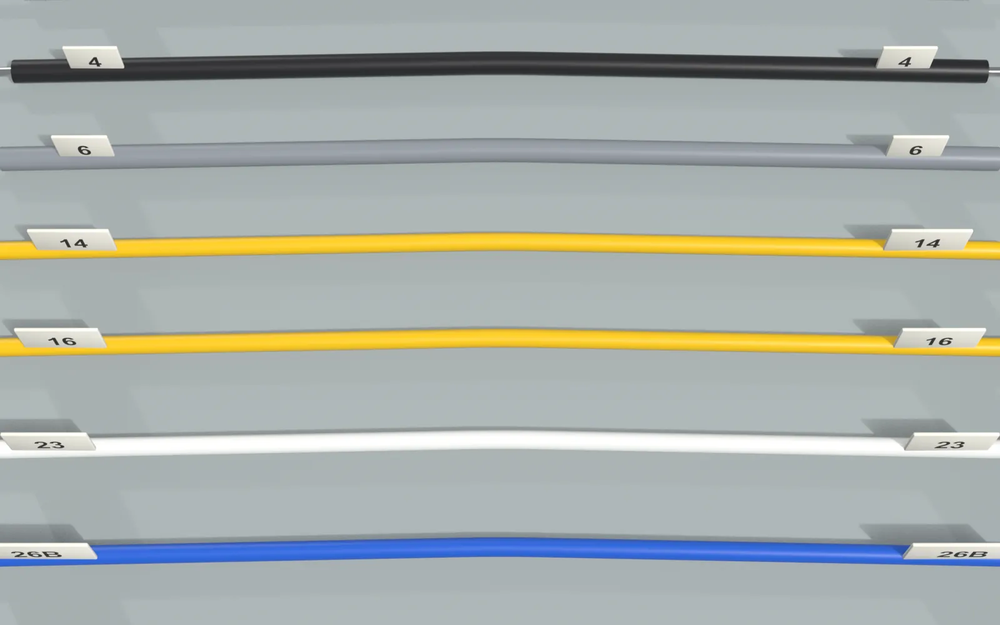
3
Corte e numere os fios
Corte cada fio no comprimento da lista de corte (fim da página). As medidas já têm sobra.
Cole uma fita crepe com o número nas duas pontas. Todo passo deste manual chama o fio pelo número.
Confira
São 36 pedaços: 9 de 22 AWG (bateria e motores) e 27 de 26 AWG. O fio 26 é cortado em três: 26A, 26B e 26C.
Ampliar
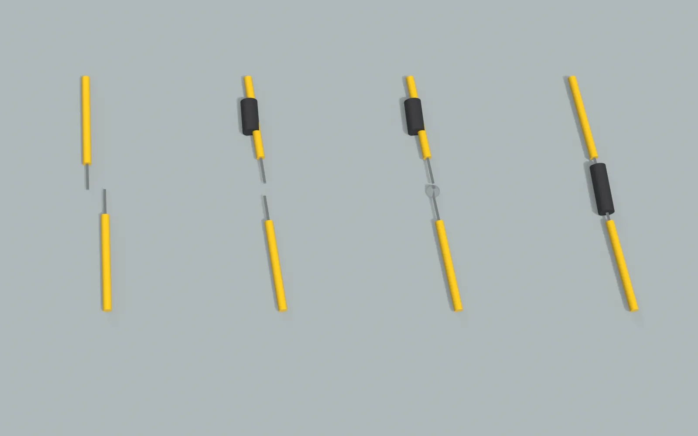
1234
4
Como emendar dois fios
1 Desencape 4 mm de cada ponta. 2 Passe o termorretrátil antes, torça as pontas juntas e estanhe.
3 Solde com 2 a 3 segundos de ferro e espere esfriar sem mexer. 4 Puxe o tubo por cima da emenda e aqueça até encolher.
Confira
Puxe de leve: a emenda não pode soltar. Solda boa é lisa e brilhante; opaca e em bolinha é solda fria, refaça.
2Bloco 2 · passos 5 a 14
Sensores de borda
Dois TCRT5000 de 4 perninhas. Monte primeiro o esquerdo; o direito é igual, só muda o número dos fios.
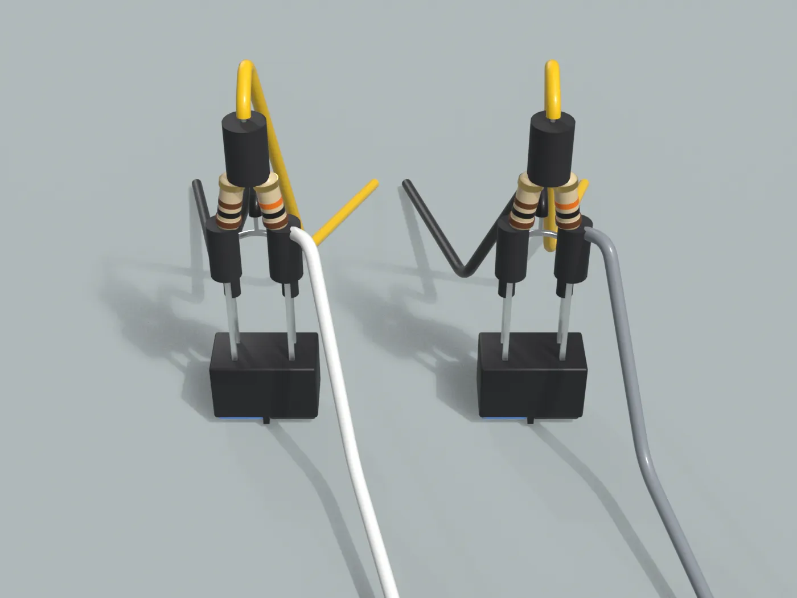
Ampliar
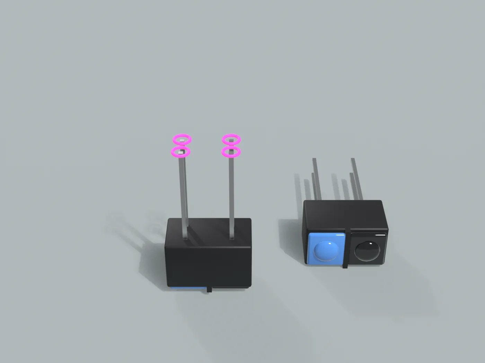
AKCElente azullente preta
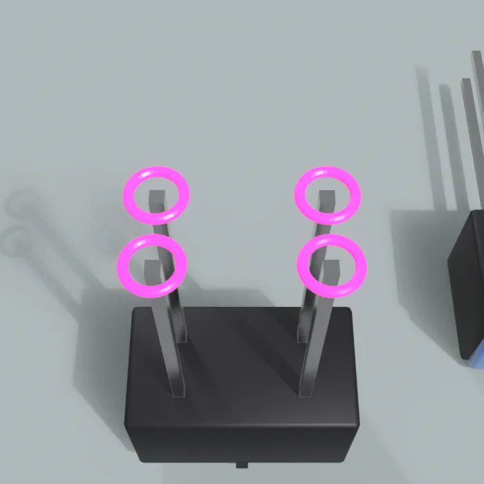
5
Ache as pernas A, K, C e E
1×TCRT50004 perninhas
Debaixo da lente azul ficam A e K. Debaixo da lente preta ficam C e E.
Na mesma fileira ficam A e C; na outra, K e E.
Confira
Multímetro no modo diodo. Encoste a ponta vermelha numa perna do lado azul e a preta na outra: se aparecer por volta de 1,1 V, a vermelha está no A e a preta no K. Marque o A com caneta.
Ampliar
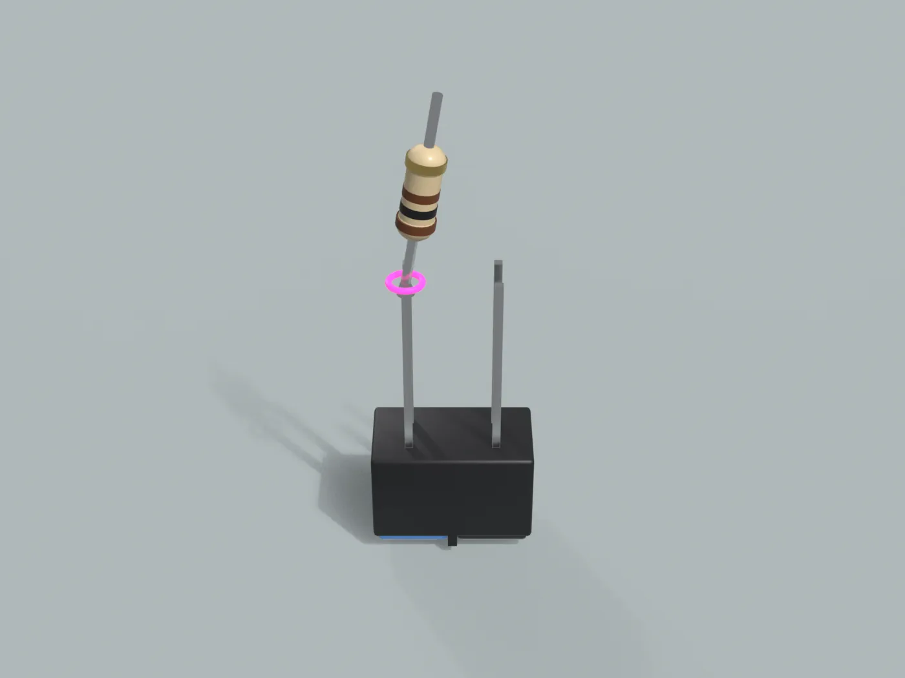
100 Ω
6
100 Ω na perna A
1×Resistor 100 Ωmarrom · preto · marrom
Termorretrátilpedaços de 1 a 2 cm
Passe um pedaço de termorretrátil na perna A. Encoste uma perna do resistor de 100 Ω ao lado dela e solde.
Atenção
Sem esse resistor, o LED do sensor queima na primeira vez que ligar.
Ampliar
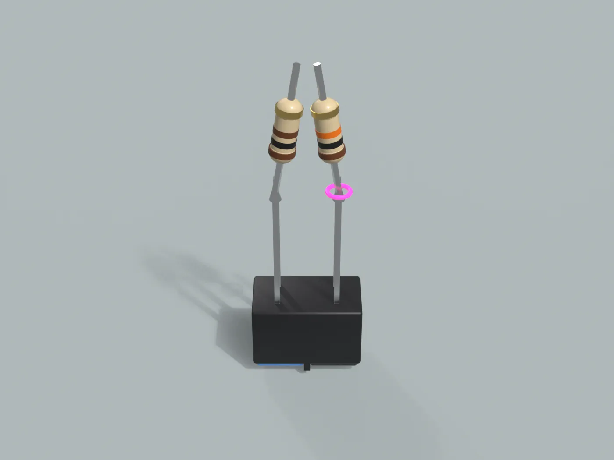
10 kΩ
7
10 kΩ na perna C
1×Resistor 10 kΩmarrom · preto · laranja
Termorretrátilpedaços de 1 a 2 cm
Mesma coisa na perna C, com o resistor de 10 kΩ. Incline os dois resistores até as pontas de cima se encostarem.
Ampliar
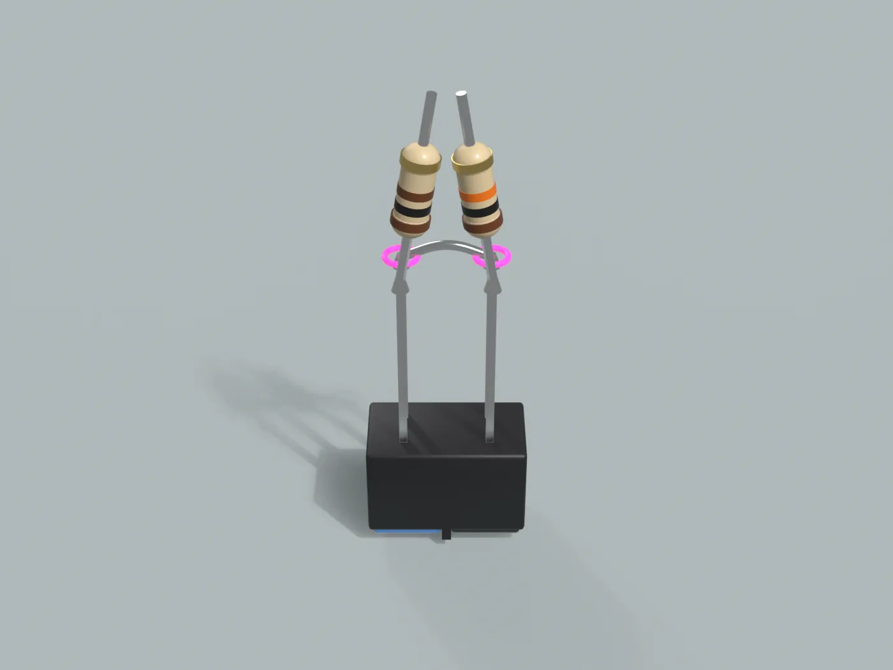
ponte
8
Una as pernas K e E
Com uma sobra de perna de resistor, faça uma ponte entre K e E e solde nas duas.
Confira
A ponte não pode encostar nas pernas A e C.
Ampliar
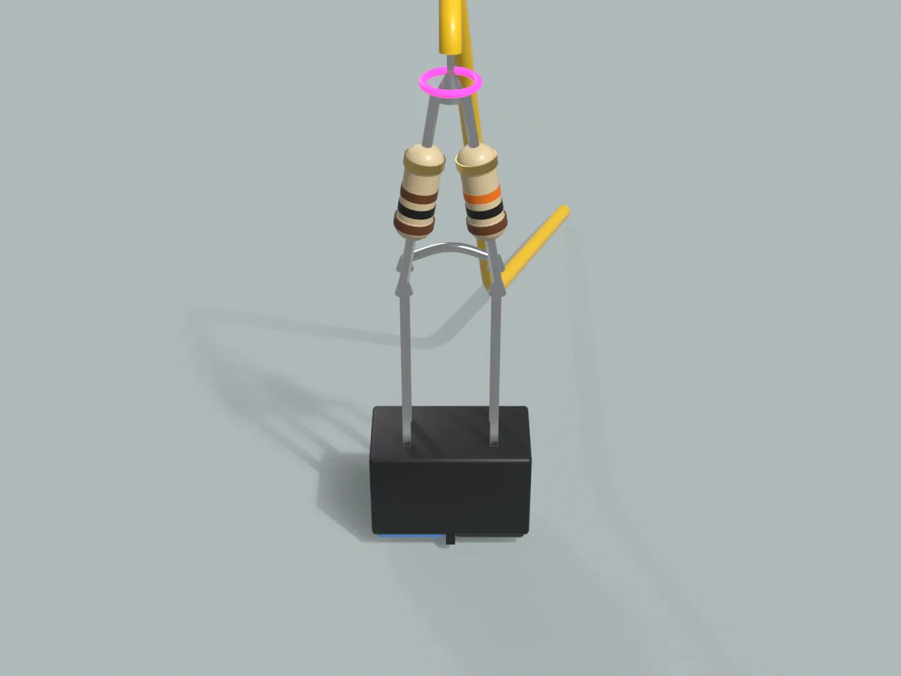
16
9
Fio 16 na ponta dos resistores
1×Fio 16amarelo · 26 AWG · corte com 50 mm
Termorretrátilpedaços de 1 a 2 cm
Torça as pontas de cima dos dois resistores junto com a ponta do fio 16 (amarelo, 3,3 V) e solde.
16emenda amarelaatéresistores do sensor esquerdo
Confira
Essa é a única junção de 3 coisas no sensor: 100 Ω + 10 kΩ + fio amarelo.
Ampliar
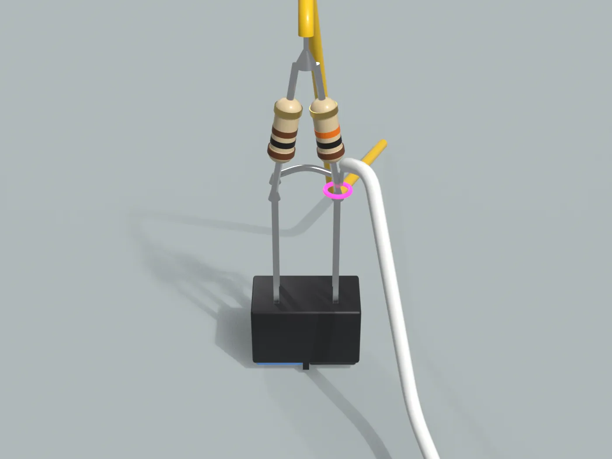
23
10
Fio 23 na perna C
1×Fio 23branco · 26 AWG · corte com 160 mm
Solde o fio 23 (branco, sinal) na perna C, no mesmo ponto onde já está o 10 kΩ.
23sensor esquerdo · perna CatéESP32 · D34
Ampliar
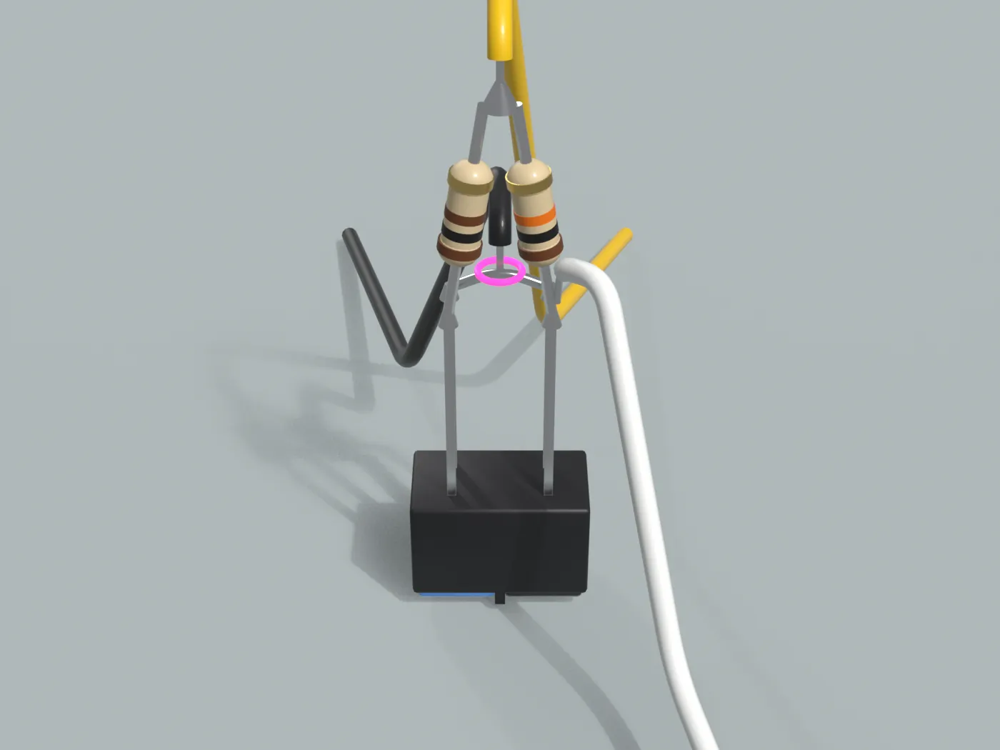
20
11
Fio 20 na ponte K–E
1×Fio 20preto · 26 AWG · corte com 80 mm
Solde o fio 20 (preto, GND) no meio da ponte entre K e E.
20emenda pretaatésensor esquerdo · perna K
Ampliar
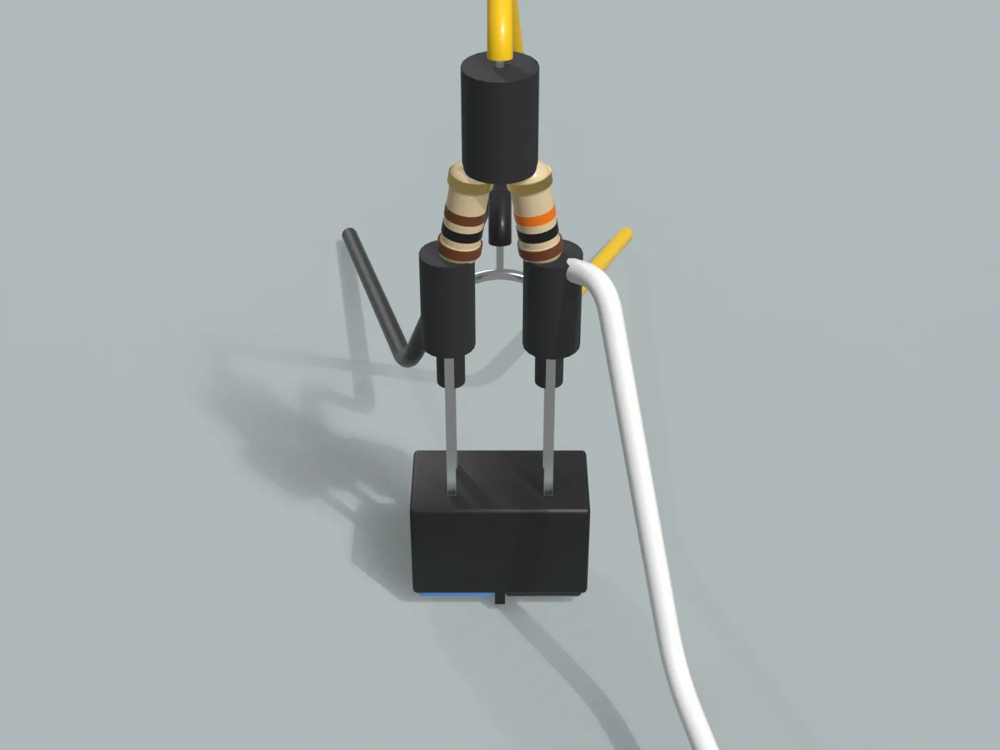
12
Termorretrátil em tudo
Puxe os tubos por cima de cada solda e aqueça. Nenhum metal pode ficar à mostra.
Confira
Multímetro no bipe: entre o fio 16 e o fio 20 não pode apitar.
Ampliar162320172421esquerdodireito
13
Monte o sensor direito igual
×2
1×TCRT5000
1×Resistor 100 Ωmarrom · preto · marrom
1×Resistor 10 kΩmarrom · preto · laranja
1×Fio 17amarelo · 26 AWG · corte com 70 mm
1×Fio 24cinza · 26 AWG · corte com 110 mm
1×Fio 21preto · 26 AWG · corte com 50 mm
Repita os passos com o outro sensor. Só mudam os fios: 17 no lugar do 16, 24 (cinza) no lugar do 23 e 21 no lugar do 20.
17emenda amarelaatéresistores do sensor direito
24sensor direito · perna CatéESP32 · D35
21emenda pretaatésensor direito · perna K
Ampliar
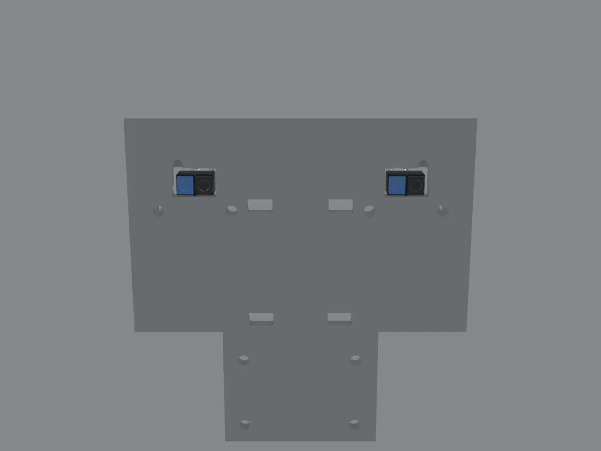
14
Cole os sensores nas janelas do piso
Cola quente
Cartão de visitacalço de 0,3 mm
Chassi em pé numa mesa lisa. Ponha um pedaço de cartão dentro da janela, desça o sensor com as lentes para baixo até encostar no cartão e cole só por cima.
O sensor com os fios 16, 23 e 20 vai na janela do lado esquerdo do robô.
Confira
Esquerda e direita são sempre do robô: sonar apontando para longe de você, o lado esquerdo dele fica à sua esquerda.
3Bloco 3 · passos 15 a 21
Sonar HC-SR04
Quatro fios e um divisor de tensão com dois resistores. O divisor protege o ESP32 dos 5 V do sonar.
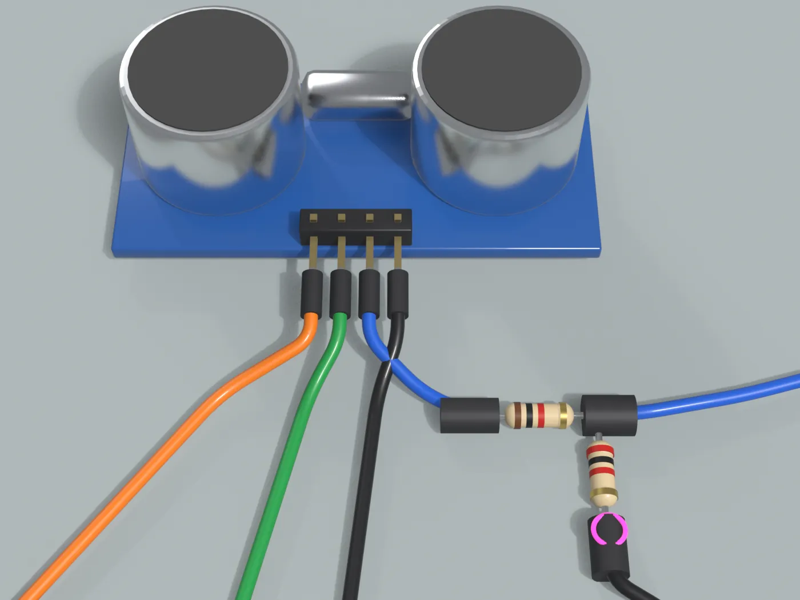
Ampliar
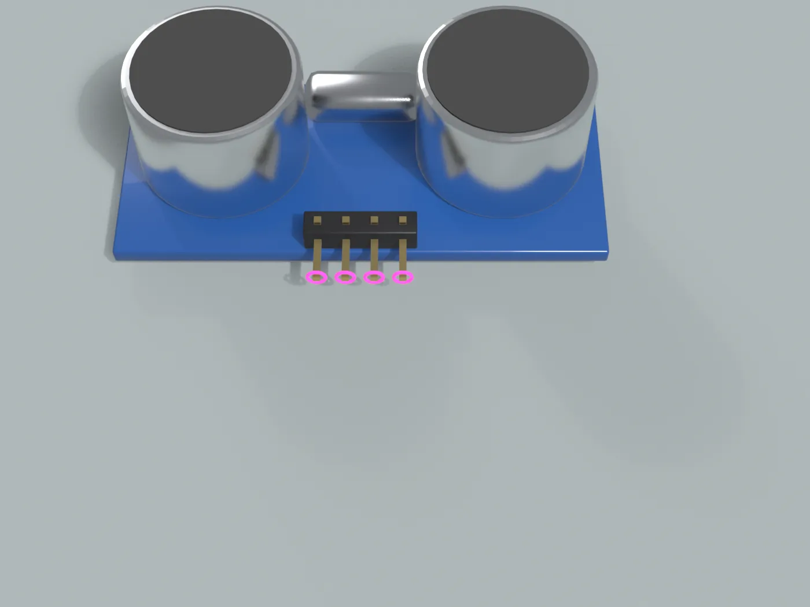
VccTrigEchoGnd
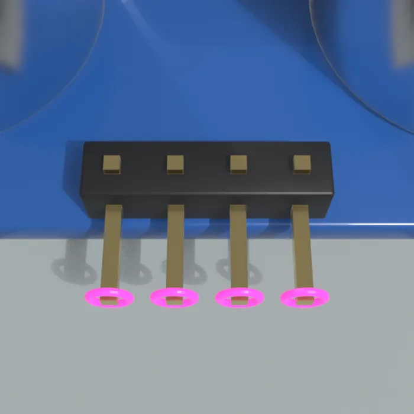
15
Ache os 4 pinos
1×HC-SR04
Com os transdutores virados para cima e os pinos para você: Vcc, Trig, Echo, Gnd, da esquerda para a direita. O nome está impresso na placa.
Se os pinos forem compridos, corte deixando 3 mm.
Ampliar
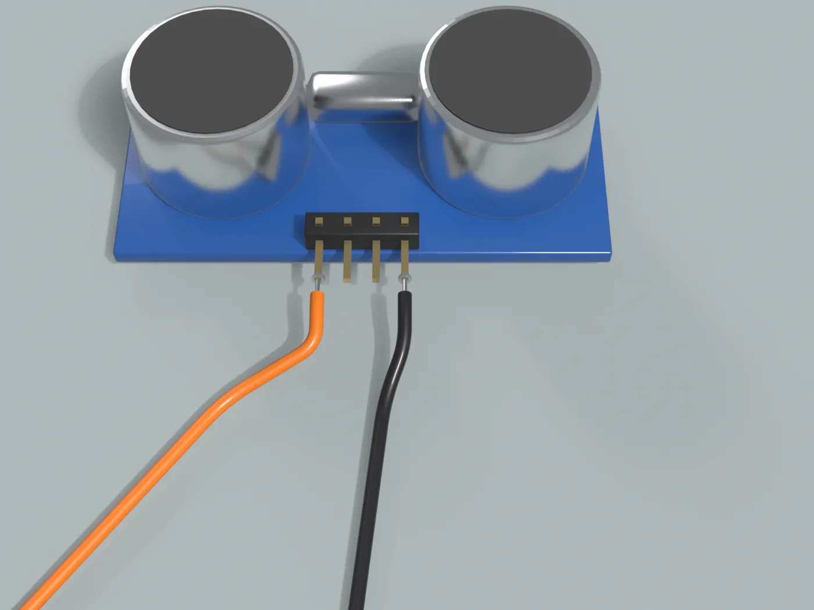
1213
16
Fios 12 e 13: alimentação
1×Fio 12laranja · 26 AWG · corte com 100 mm
1×Fio 13preto · 26 AWG · corte com 100 mm
Termorretrátilpedaços de 1 a 2 cm
Fio 12 (laranja, 5 V) no Vcc. Fio 13 (preto, GND) no Gnd.
12LM2596 · OUT+atésonar · VCC
13LM2596 · OUT−atésonar · GND
Atenção
Invertendo Vcc e Gnd o sonar queima.
Ampliar
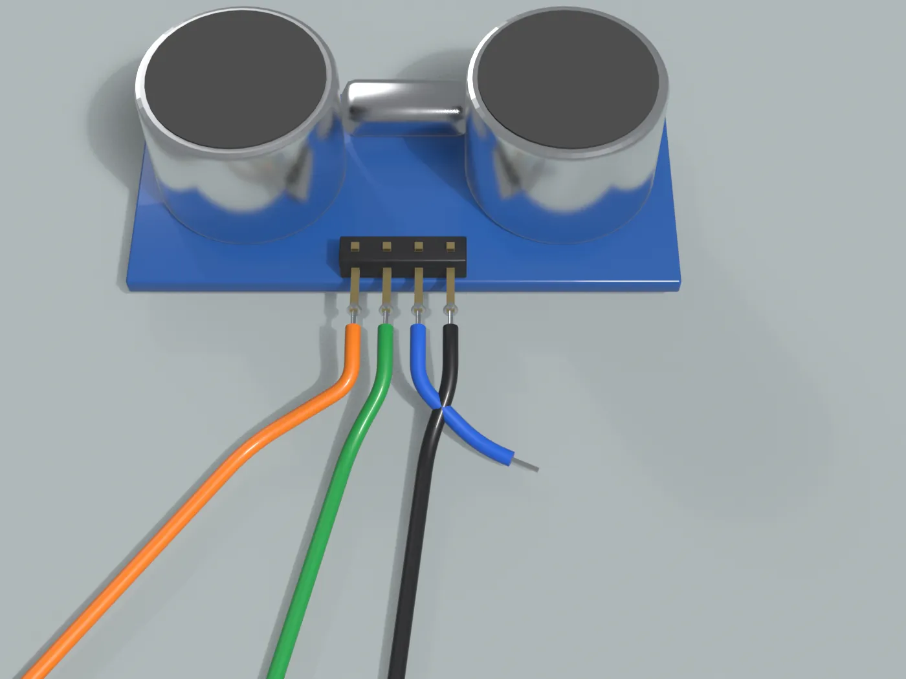
2526A
17
Fios 25 e 26A: sinais
1×Fio 25verde · 26 AWG · corte com 170 mm
1×Fio 26Aazul · 26 AWG · corte com 70 mm
Termorretrátilpedaços de 1 a 2 cm
Fio 25 (verde) no Trig. Fio 26A (azul, 60 mm) no Echo.
25sonar · TRIGatéESP32 · D5
26Asonar · ECHOatéresistor 1 kΩ
Ampliar
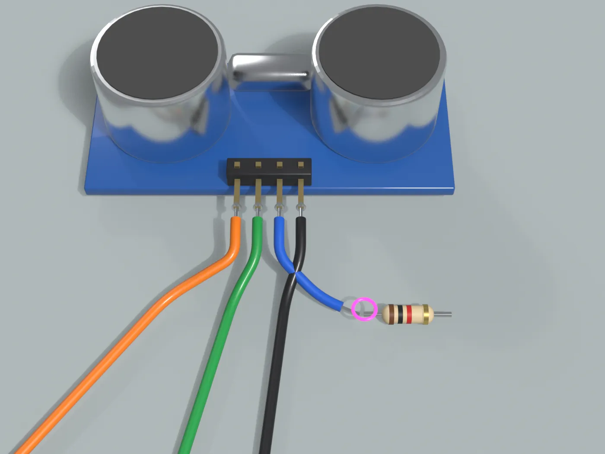
1 kΩ
18
1 kΩ na ponta do fio 26A
1×Resistor 1 kΩmarrom · preto · vermelho
Termorretrátilpedaços de 1 a 2 cm
Emende o resistor de 1 kΩ na ponta solta do fio 26A, como uma emenda de dois fios.
Ampliar
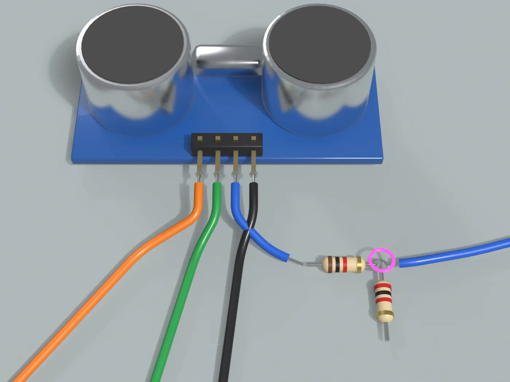
2 kΩ26B
19
O nó: 2 kΩ e fio 26B
1×Resistor 2 kΩvermelho · preto · vermelho
1×Fio 26Bazul · 26 AWG · corte com 130 mm
Termorretrátilpedaços de 1 a 2 cm
Na outra perna do 1 kΩ, solde juntos: uma perna do 2 kΩ e o fio 26B (azul). O 26B leva o sinal ao ESP32.
26Bresistor 1 kΩatéESP32 · D18
Ampliar26C
20
Fio 26C no 2 kΩ
1×Fio 26Cpreto · 26 AWG · corte com 40 mm
Termorretrátilpedaços de 1 a 2 cm
Na perna livre do 2 kΩ, solde o fio 26C (preto). Ele vai para a emenda GND no bloco 8. Termorretrátil em todas as soldas.
26Cresistor 2 kΩatéemenda preta
Atenção
O fio 26B nunca pode ir direto no Echo: sem o 1 kΩ e o 2 kΩ, o sinal chega com 5 V e estraga o pino do ESP32.
Ampliar
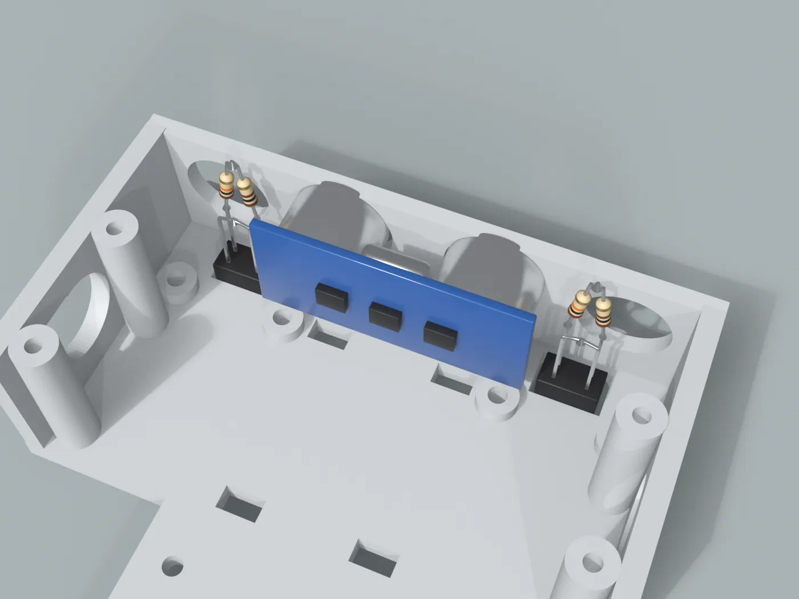
21
Encaixe o sonar na frente do chassi
Cola quente
Por dentro, encaixe os dois transdutores nos furos do meio da frente. Trave com uma gota de cola quente na lateral da placa.
4Bloco 4 · passos 22 a 25
Receptor do controle do juiz
Recebe o START e o STOP do juiz. Fica no furo da frente do lado DIREITO do robô, o oposto da chave.
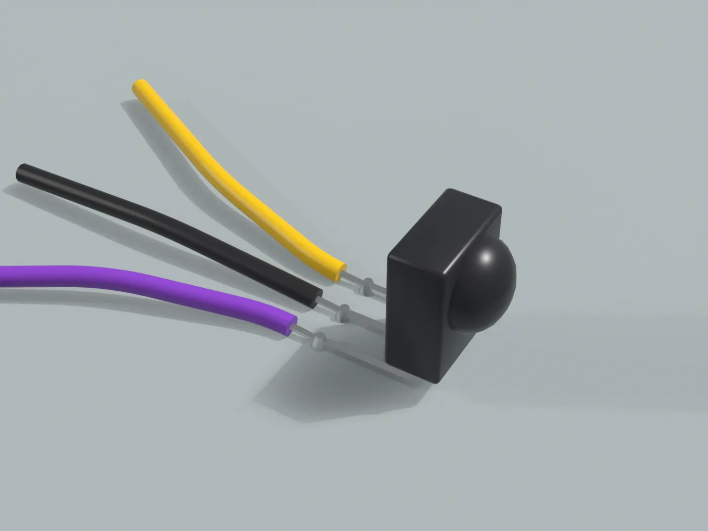
Ampliar
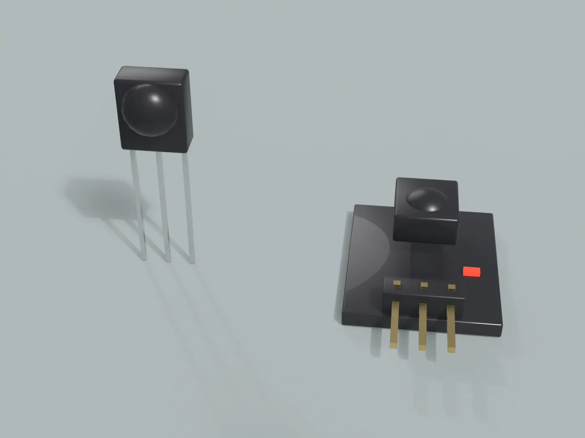
OUTGNDVCCS+−
22
Ache as 3 pernas
1×VS1838B ou KY-022
VS1838B (componente sozinho), com a bolinha virada para você: OUT, GND, VCC.
KY-022 (numa plaquinha): S, +, −. Siga o que está impresso na sua.
Atenção
O pino do meio muda: no VS1838B é GND, na KY-022 é +. Ligar trocado queima o receptor.
Ampliar
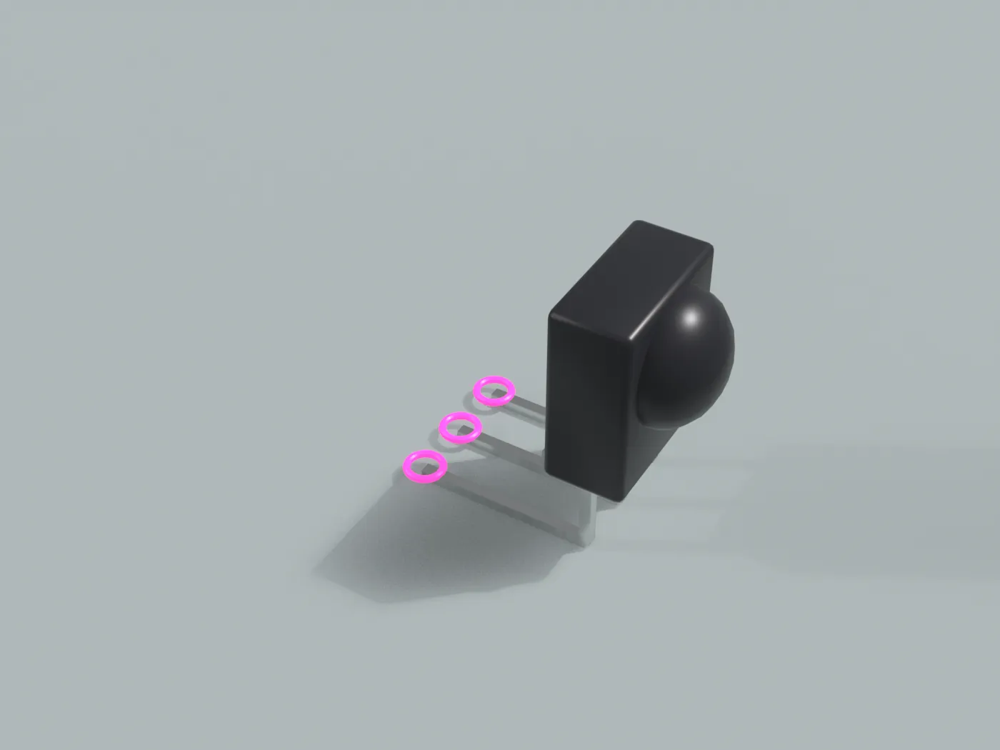
23
Dobre as pernas
Dobre as três pernas para trás, a 3 mm do corpo, e corte deixando 7 mm. Assim ele cabe atrás do furo.
Ampliar272218
24
Fios 27, 22 e 18
1×Fio 27roxo · 26 AWG · corte com 160 mm
1×Fio 22preto · 26 AWG · corte com 70 mm
1×Fio 18amarelo · 26 AWG · corte com 90 mm
Termorretrátilpedaços de 1 a 2 cm
27 (roxo) no OUT · 22 (preto) no GND · 18 (amarelo) no VCC. Na KY-022: 27 no S, 18 no +, 22 no −.
27receptor · OUTatéESP32 · D19
22emenda pretaatéreceptor · GND
18emenda amarelaatéreceptor · VCC
Atenção
Receptor só no amarelo de 3,3 V. Em 5 V, o sinal dele chega com 5 V no ESP32.
Ampliar
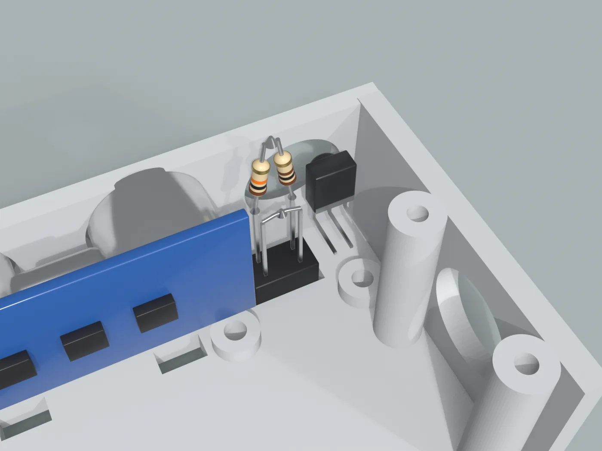
25
Cole atrás do furo direito
Cola quente
Cole com a bolinha virada para o furo externo da frente do lado direito do robô, encostada na borda de fora do furo, sem tocar nas pernas do sensor de borda.
5Bloco 5 · passos 26 a 30
Motores e rodas
Dois fios em cada motor antes de entrar na caixa.
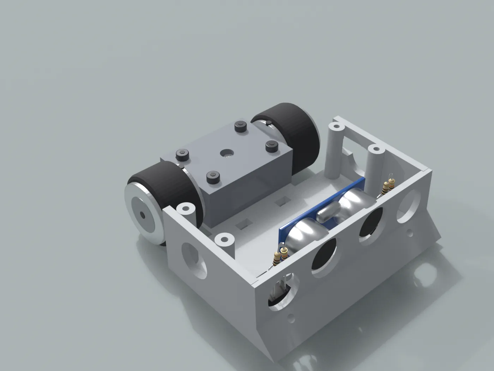
Ampliar
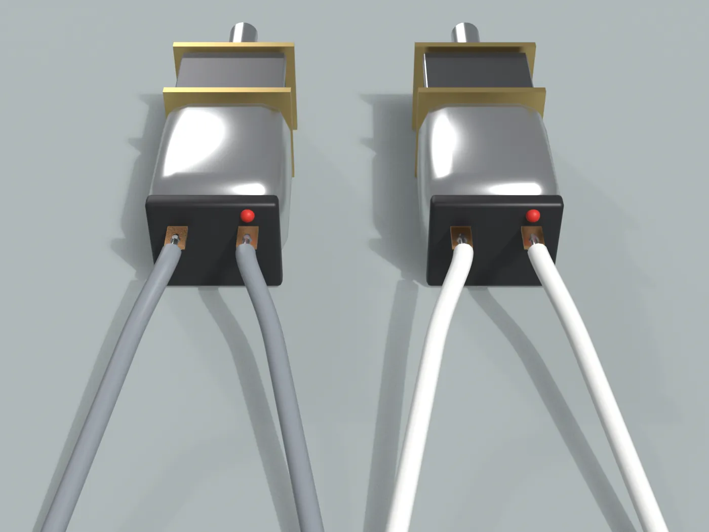
6789esquerdodireito
26
Fios nos motores
2×Motor N20
1×Fio 6cinza · 22 AWG · corte com 150 mm
1×Fio 7cinza · 22 AWG · corte com 160 mm
1×Fio 8branco · 22 AWG · corte com 160 mm
1×Fio 9branco · 22 AWG · corte com 150 mm
Motor esquerdo: fios 6 e 7 (cinza). Motor direito: fios 8 e 9 (branco). Um fio em cada terminal de cobre.
Motor não tem lado certo: se a roda girar ao contrário no teste, é só trocar os dois fios dele na ponte H.
6motor esquerdoatéponte H · A01
7motor esquerdoatéponte H · A02
8motor direitoatéponte H · B01
9motor direitoatéponte H · B02
Ampliar
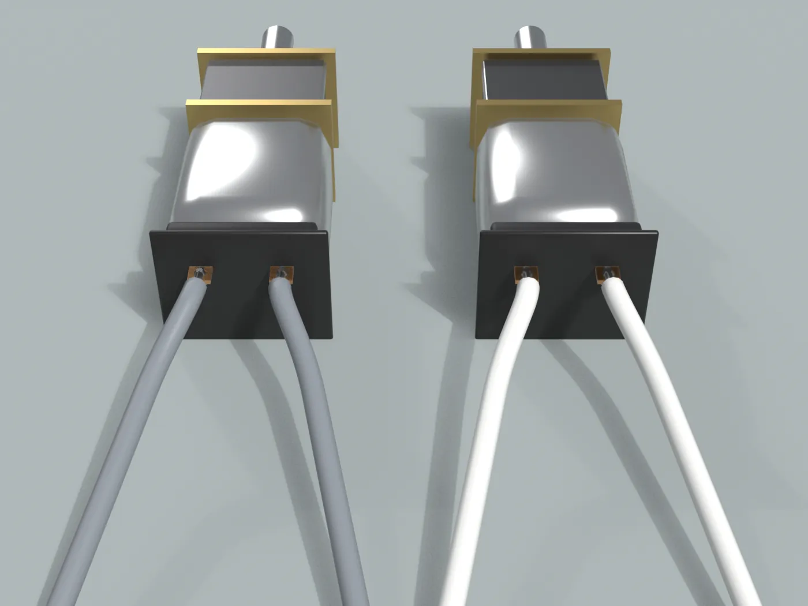
fita isolante
27
Isole a traseira
Fita isolante
Cubra a traseira de cada motor com fita isolante. Os dois motores se encostam dentro da caixa.
Atenção
Terminal de um motor encostando no do outro dá curto na ponte H.
Ampliar
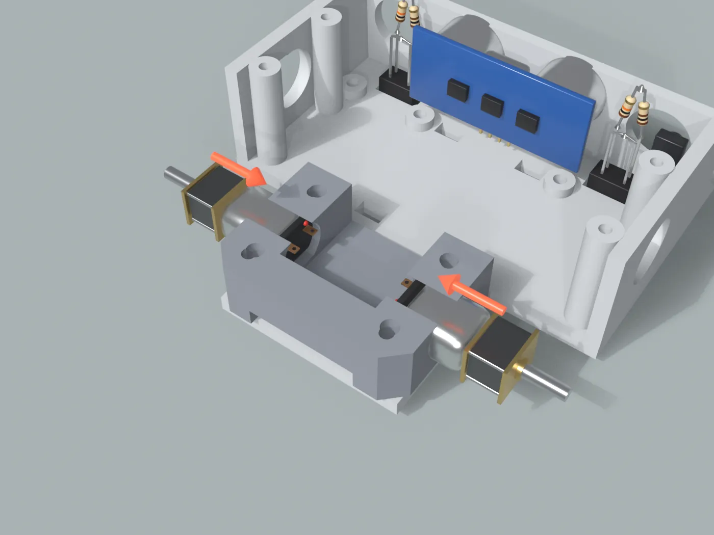
28
Motores na caixa
Enfie cada motor pela sua lateral, com o eixo para fora. O esquerdo entra pelo lado esquerdo do robô.
Ampliar
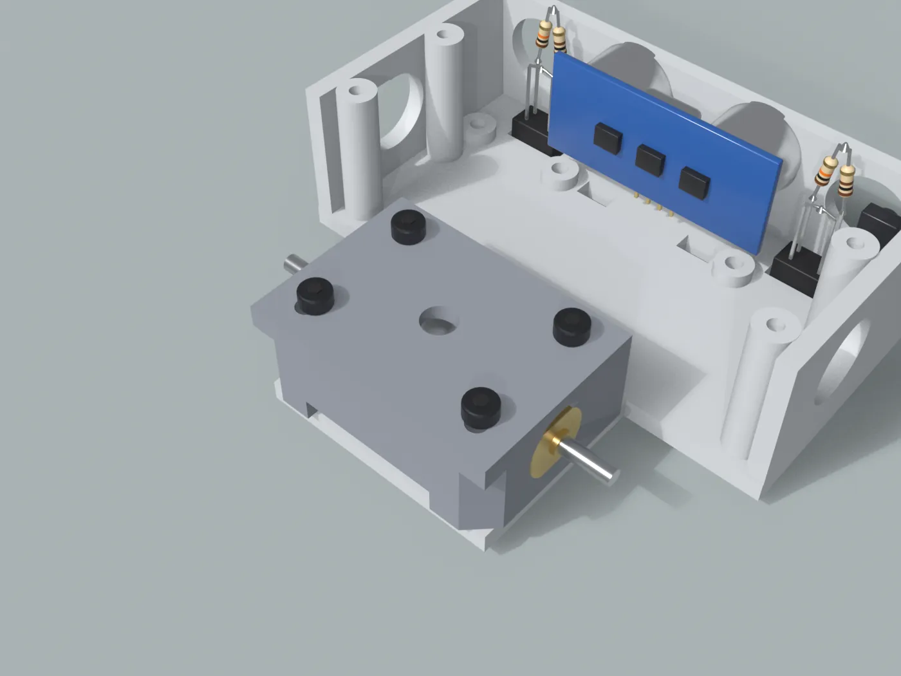
29
Tampa e parafusos
4×Parafuso M3 × 25com porca
Passe os quatro fios pelo furo do meio da tampa, encaixe a tampa e parafuse a caixa no chassi.
Ampliar
30
Rodas
2×Roda StickyMAX 32 mm
Aperte o parafuso da roda na parte plana do eixo. Gire com a mão: não pode raspar.
6Bloco 6 · passos 31 a 37
Bateria, conector e chave
A chave SS12D00 aguenta só 0,5 A: ela liga só a eletrônica. Os motores recebem a bateria direto pelo fio 3.
Ampliar
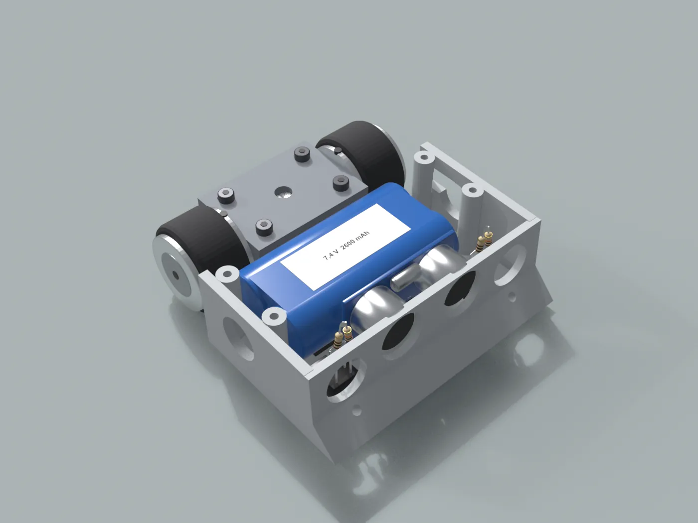
31
Bateria com velcro
1×Bateria 7,4 V
2Tiras de velcro
Velcro no piso e na bateria. Bateria deitada no fundo da baia. Velcro, não cola: ela sai para carregar.
Ampliar
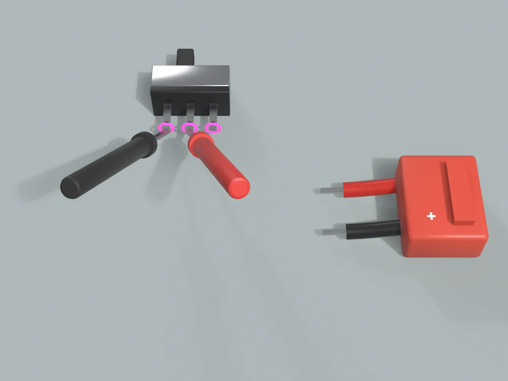
P1COMP2+−
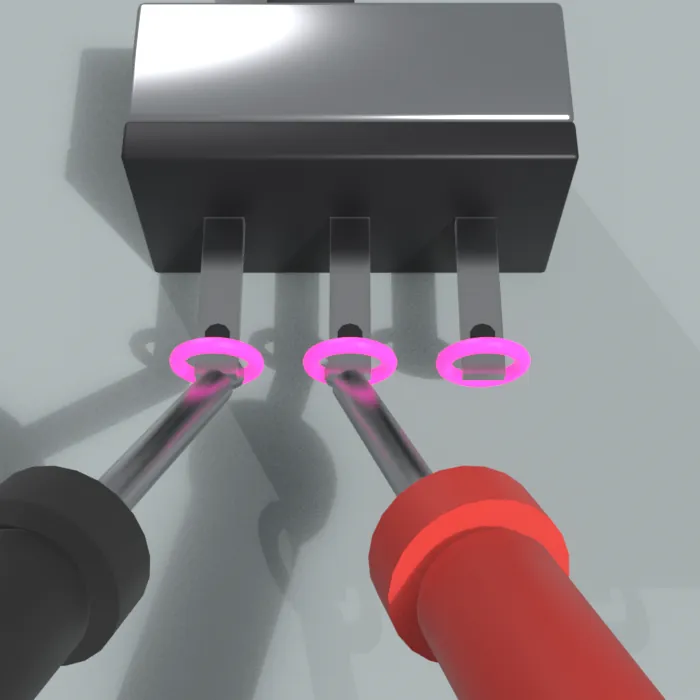
32
Descubra o lado que liga
1×Chave SS12D003 perninhas
1×Conectorlado do robô
O pino do meio é o COM. Multímetro no bipe entre o COM e o pino de um lado. Empurre o botão: para um lado apita, para o outro não.
Chame de P1 o pino que apita e escreva LIGA na posição do botão em que apitou.
Ampliar
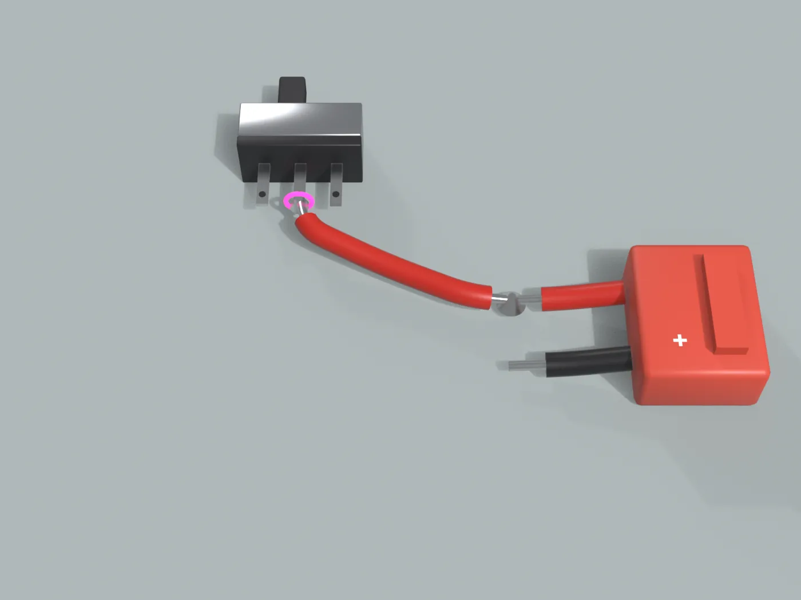
1
33
Fio 1: conector + até o COM
1×Fio 1vermelho · 22 AWG · corte com 60 mm
Termorretrátilpedaços de 1 a 2 cm
Solde o fio 1 (vermelho) no fio vermelho (+) do conector e a outra ponta no pino do meio da chave.
1conector da bateria · +atéchave · COM
Atenção
Solde com a bateria desconectada. Com ela conectada, um toque do + no − esquenta e derrete os fios.
Ampliar
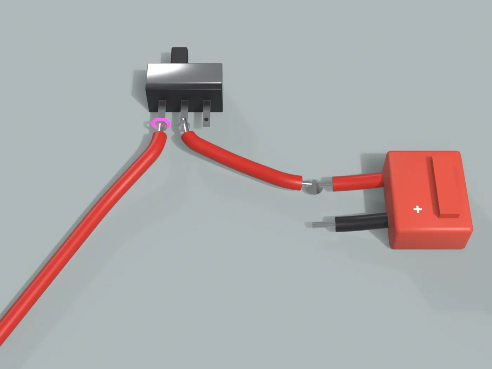
2
34
Fio 2 no P1
1×Fio 2vermelho · 22 AWG · corte com 60 mm
Termorretrátilpedaços de 1 a 2 cm
Solde o fio 2 (vermelho) no P1. Ele vai ao IN+ do LM2596. O terceiro pino da chave fica vazio.
2chave · P1atéLM2596 · IN+
Ampliar
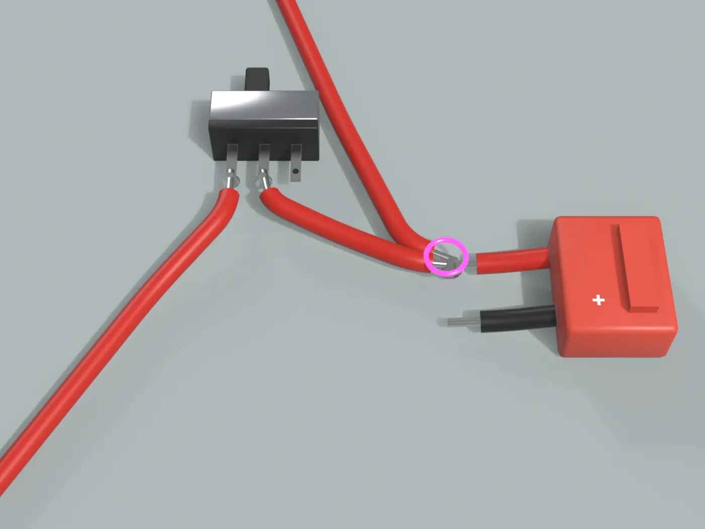
3
35
Fio 3 no + do conector
1×Fio 3vermelho · 22 AWG · corte com 110 mm
No mesmo ponto do fio 1, solde o fio 3 (vermelho). Ele vai direto ao VM da ponte H.
3conector da bateria · +atéponte H · VM
Confira
O + do conector fica com dois fios: 1 e 3.
Ampliar45
36
Fios 4 e 5 no − do conector
1×Fio 4preto · 22 AWG · corte com 120 mm
1×Fio 5preto · 22 AWG · corte com 50 mm
Termorretrátilpedaços de 1 a 2 cm
No fio preto (−) do conector, solde juntos os fios 4 e 5 (pretos). Termorretrátil nas duas emendas.
4conector da bateria · −atéponte H · GND
5conector da bateria · −atéLM2596 · IN−
Confira
Multímetro no bipe entre o + e o − do conector: não pode apitar.
Ampliar
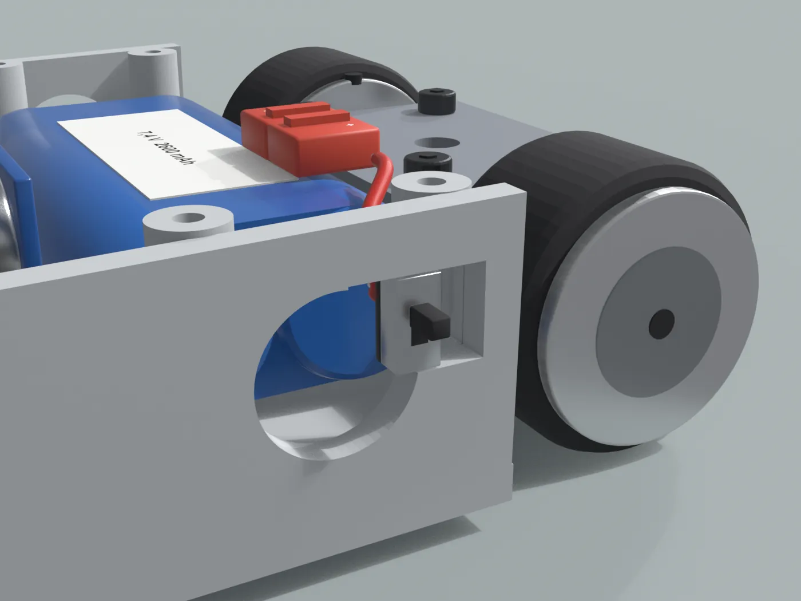
37
Chave na lateral esquerda
Cola quente
Cole a chave no furo da lateral esquerda do robô, com o botão para fora. O conector fica em cima da bateria.
7Bloco 7 · passos 38 a 41
Regulador LM2596
Fica colado em cima da bateria. Transforma 7,4 V em 5 V. Precisa ser ajustado antes de ligar qualquer coisa na saída.
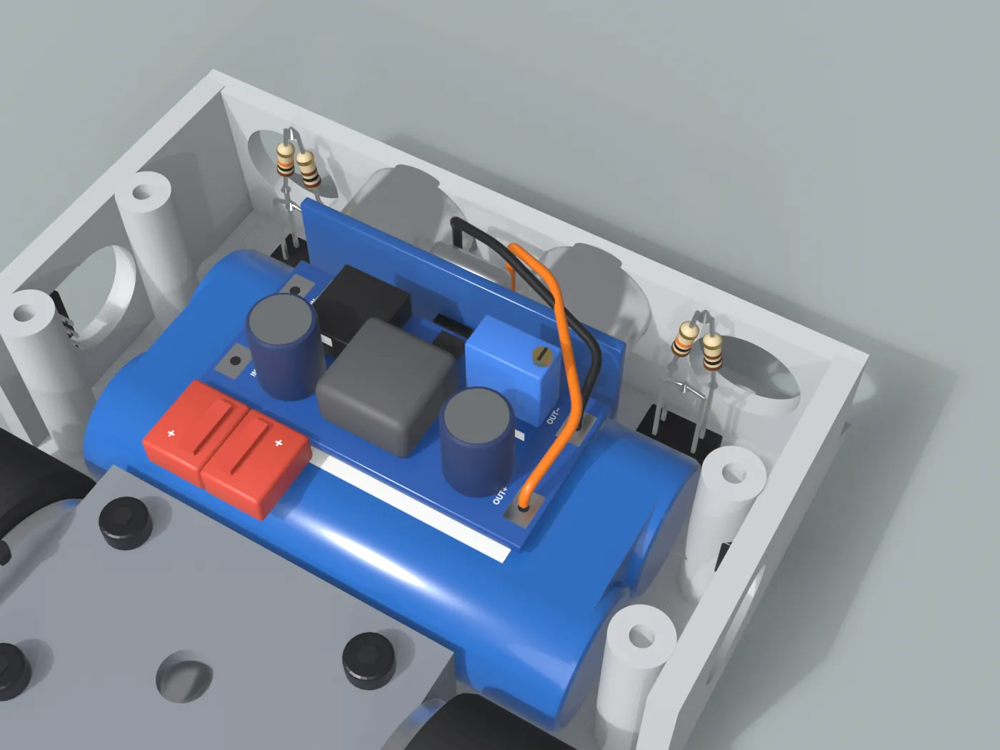
Ampliar
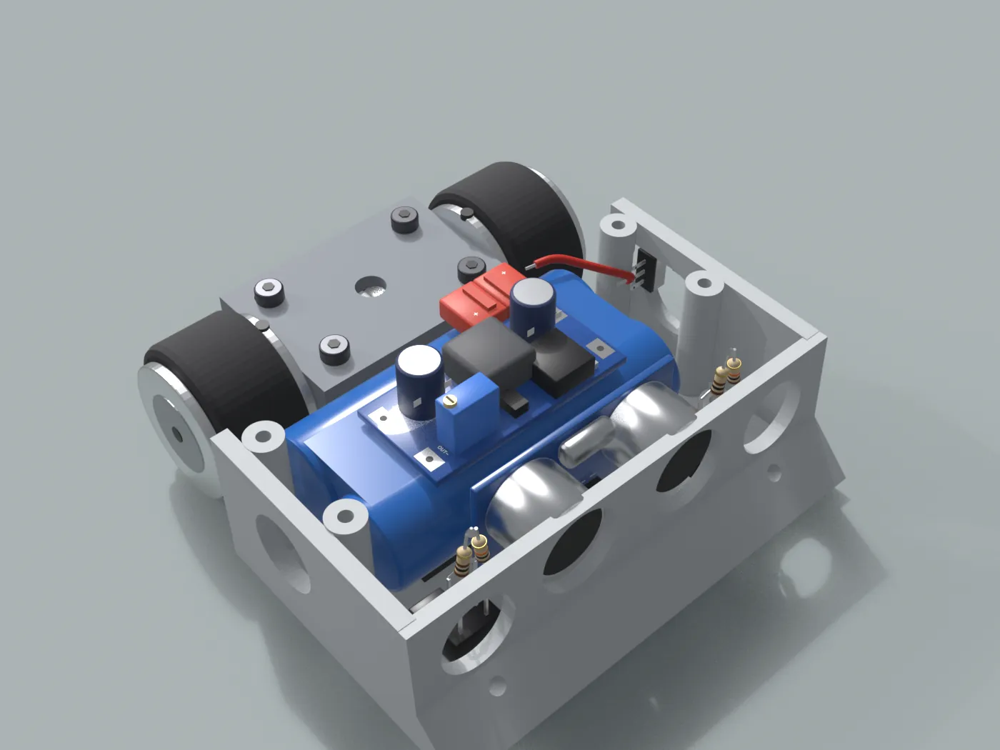
38
Cole em cima da bateria
1×LM2596
Fita dupla-face
Fita dupla-face embaixo. Entrada (IN) para o lado esquerdo do robô, perto da chave; saída (OUT) para o direito.
Ampliar
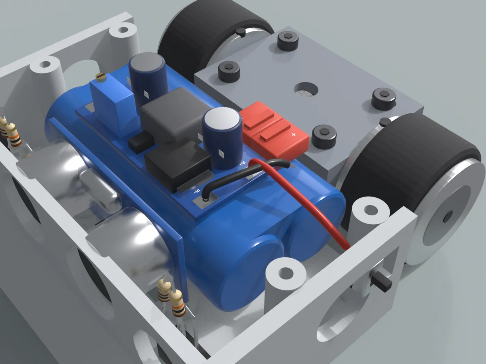
39
Fios 2 e 5 na entrada
1×Fio 2vermelho · 22 AWG · corte com 60 mm
1×Fio 5preto · 22 AWG · corte com 50 mm
Fio 2 (vermelho, da chave) no IN+. Fio 5 (preto, do conector) no IN−. Leia o + e o − impressos na placa.
2chave · P1atéLM2596 · IN+
5conector da bateria · −atéLM2596 · IN−
Atenção
Entrada invertida queima o LM2596 na hora: ele não tem proteção.
Ampliar
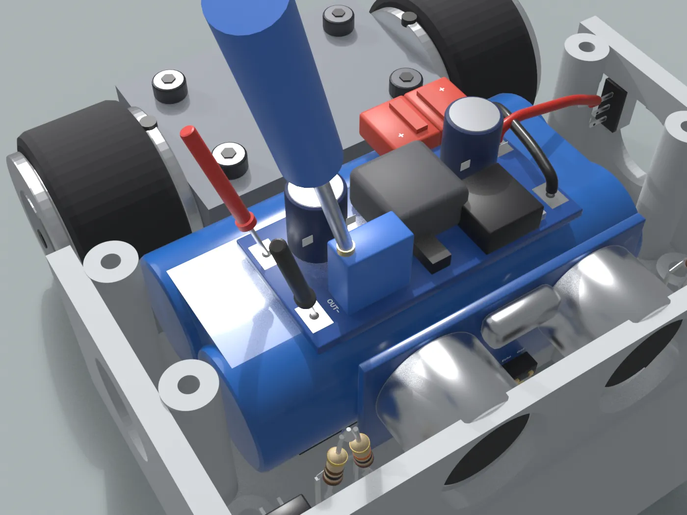
40
Ajuste para 5,00 V
Multímetroem tensão DC
Chave de fenda pequena
Nada ligado na saída. Conecte a bateria e ponha a chave em LIGA. Ponta vermelha no OUT+, preta no OUT−.
Gire o parafuso dourado do trimpot: horário sobe, anti-horário desce. Pare em 5,00 V. Pode levar 10 a 20 voltas até mudar. Depois, chave em DESLIGA e bateria desconectada.
Atenção
Ele vem de fábrica numa tensão qualquer, que pode passar de 30 V. Ligar os fios da saída antes de ajustar queima o sonar e o ESP32.
Ampliar
41
Fios 12, 10, 13 e 11 na saída
1×Fio 12laranja · 26 AWG · corte com 100 mm
1×Fio 10laranja · 26 AWG · corte com 140 mm
1×Fio 13preto · 26 AWG · corte com 100 mm
1×Fio 11preto · 26 AWG · corte com 130 mm
No OUT+, solde juntos o 12 (já está no sonar) e o 10 (laranja, vai ao VIN do ESP32).
No OUT−, solde juntos o 13 (já está no sonar) e o 11 (preto, vai ao GND do ESP32).
12LM2596 · OUT+atésonar · VCC
10LM2596 · OUT+atéESP32 · VIN
13LM2596 · OUT−atésonar · GND
11LM2596 · OUT−atéESP32 · GND
Confira
Cada furo da saída fica com dois fios. As pontas soltas do 10 e do 11 serão soldadas no bloco 11.
8Bloco 8 · passos 42 a 44
Emendas 3V3 e GND
Um pino do ESP32 alimenta vários sensores porque o fio se divide numa emenda. São duas: uma amarela e uma preta.
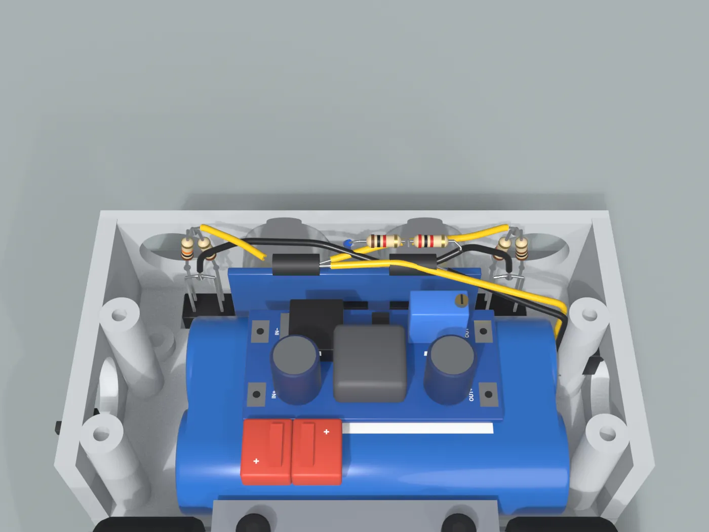
Ampliar
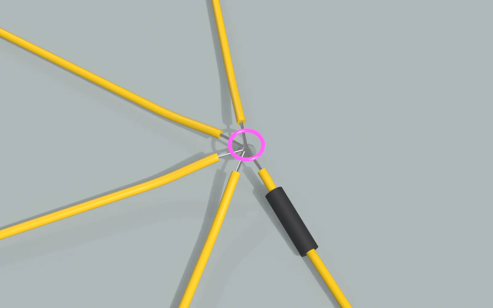
1416171819
42
Emenda amarela: 3V3
1×Fio 14amarelo · 26 AWG · corte com 130 mm
1×Fio 16amarelo · 26 AWG · corte com 50 mm
1×Fio 17amarelo · 26 AWG · corte com 70 mm
1×Fio 18amarelo · 26 AWG · corte com 90 mm
1×Fio 19amarelo · 26 AWG · corte com 130 mm
Termorretrátilpedaços de 1 a 2 cm
Passe um termorretrátil grosso num dos fios. Desencape 5 mm de cada ponta, torça as cinco juntas e solde.
Entram: 16 e 17 (sensores de borda), 18 (receptor), 19 (vai à ponte H) e 14 (vai ao 3V3 do ESP32).
14ESP32 · 3V3atéemenda amarela
16emenda amarelaatéresistores do sensor esquerdo
17emenda amarelaatéresistores do sensor direito
18emenda amarelaatéreceptor · VCC
19emenda amarelaatéponte H · VCC
Atenção
Só fios amarelos nesta emenda. Um preto aqui é curto direto no ESP32.
Ampliar1520212226C
43
Emenda preta: GND
1×Fio 15preto · 26 AWG · corte com 130 mm
1×Fio 20preto · 26 AWG · corte com 80 mm
1×Fio 21preto · 26 AWG · corte com 50 mm
1×Fio 22preto · 26 AWG · corte com 70 mm
1×Fio 26Cpreto · 26 AWG · corte com 40 mm
Termorretrátilpedaços de 1 a 2 cm
Mesma coisa com cinco pretos: 20 e 21 (sensores de borda), 22 (receptor), 26C (divisor do sonar) e 15 (vai ao GND do ESP32).
15ESP32 · GNDatéemenda preta
20emenda pretaatésensor esquerdo · perna K
21emenda pretaatésensor direito · perna K
22emenda pretaatéreceptor · GND
26Cresistor 2 kΩatéemenda preta
Confira
O GND do sonar e o da ponte H não entram aqui: eles vão no LM2596 e no conector da bateria.
Ampliar
44
Encolha e acomode
Puxe o tubo por cima de cada emenda e aqueça. Acomode as duas atrás do sonar, em cima da borda da placa dele.
Confira
Multímetro no bipe entre um fio amarelo e um preto: não pode apitar.
9Bloco 9 · passos 45 a 46
Plataforma mais alta
Com o LM2596 em cima da bateria, a plataforma sobe 12 mm com espaçadores.
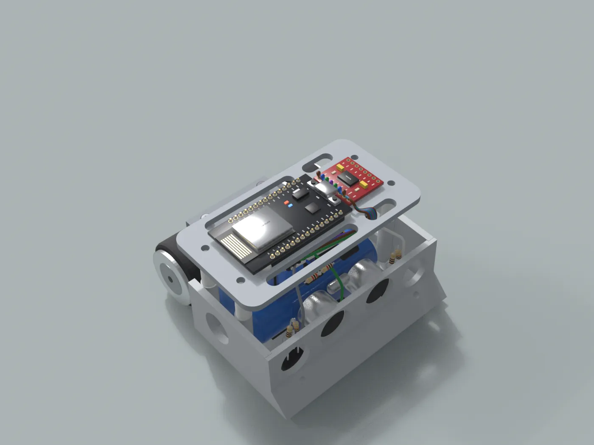
Ampliar
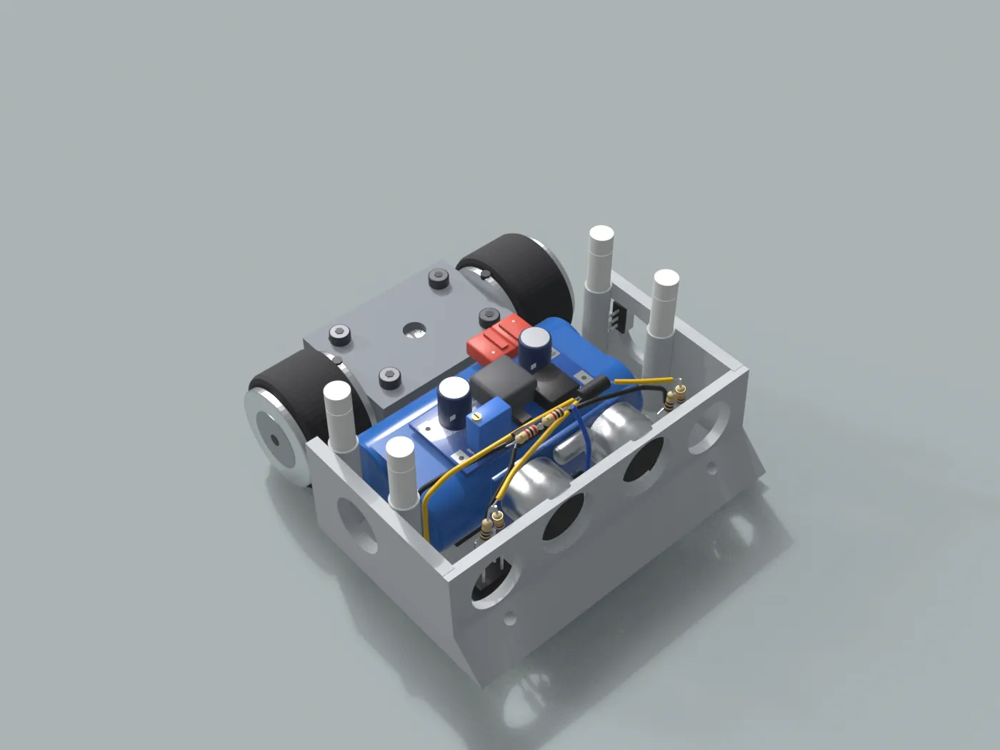
45
Espaçadores de 12 mm
4×Espaçador de 12 mmnylon
Um espaçador em cima de cada uma das 4 colunas do chassi.
Confira
Meça a altura do seu LM2596 (da placa ao topo do capacitor). Se passar de 14 mm, use espaçadores de 15 mm.
Ampliar
46
Passe os fios e apoie a plataforma
Passe cada grupo de fios pelo seu rasgo, de baixo para cima, e apoie a plataforma nos espaçadores. Ainda sem parafuso.
Rasgo
Fios que sobem
R1 · grande, frente
10, 11, 23, 24
R2 · pequeno, frente
19
R3 · grande, trás
14, 15, 25, 26B, 27
R4 · pequeno, trás
3, 4, 6, 7, 8, 9
10Bloco 10 · passos 47 a 54
Ponte H TB6612
Solde com a placa na mão, componentes virados para você. Depois ela é colada em cima da plataforma.
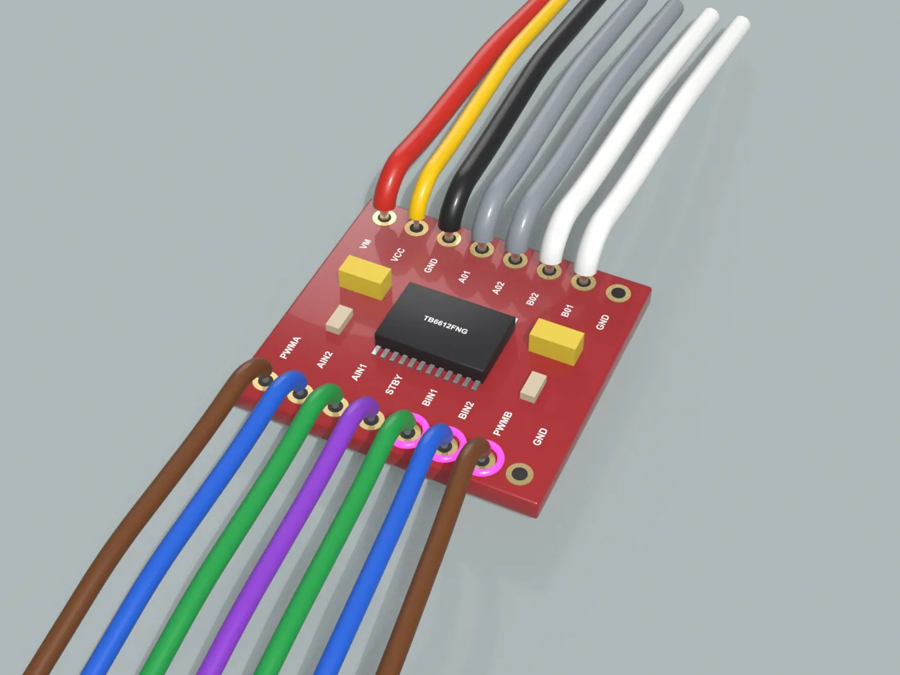
Ampliar
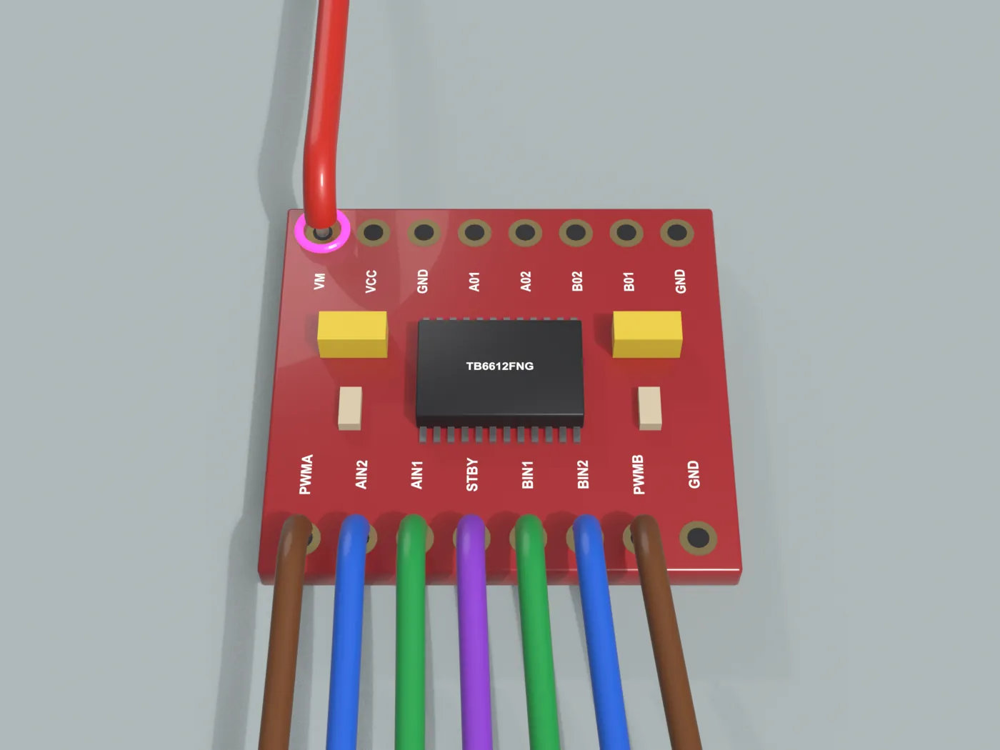
3
47
Fio 3 no VM
1×Fio 3vermelho · 22 AWG · corte com 110 mm
Fileira de cima, primeiro furo: VM. É por ele que entram os 7,4 V dos motores.
3conector da bateria · +atéponte H · VM
Atenção
O VM fica colado no VCC. Se o vermelho entrar no VCC, queima a ponte H, o ESP32 e os sensores. Leia o nome impresso.
Ampliar19
48
Fio 19 no VCC
1×Fio 19amarelo · 26 AWG · corte com 130 mm
Segundo furo da fileira de cima: VCC. O fio 19 vem da emenda amarela.
19emenda amarelaatéponte H · VCC
Ampliar4
49
Fio 4 no GND
1×Fio 4preto · 22 AWG · corte com 120 mm
Terceiro furo: GND. O fio 4 vem do − do conector da bateria.
O último GND da fileira de cima fica vazio.
4conector da bateria · −atéponte H · GND
Ampliar67
50
Motor esquerdo: 6 e 7
1×Fio 6cinza · 22 AWG · corte com 150 mm
1×Fio 7cinza · 22 AWG · corte com 160 mm
6 no A01 e 7 no A02.
6motor esquerdoatéponte H · A01
7motor esquerdoatéponte H · A02
Ampliar98
51
Motor direito: 9 e 8
1×Fio 9branco · 22 AWG · corte com 150 mm
1×Fio 8branco · 22 AWG · corte com 160 mm
9 no B02 e 8 no B01. Na placa o B02 vem antes do B01.
9motor direitoatéponte H · B02
8motor direitoatéponte H · B01
Ampliar28293031
52
Controle: 28 a 31
1×Fio 28marrom · 26 AWG · corte com 120 mm
1×Fio 29azul · 26 AWG · corte com 120 mm
1×Fio 30verde · 26 AWG · corte com 120 mm
1×Fio 31roxo · 26 AWG · corte com 100 mm
Fileira de baixo: 28 PWMA, 29 AIN2, 30 AIN1, 31 STBY. As outras pontas vão ao ESP32.
28ponte H · PWMAatéESP32 · D25
29ponte H · AIN2atéESP32 · D27
30ponte H · AIN1atéESP32 · D26
31ponte H · STBYatéESP32 · D13
Ampliar323334
53
Controle: 32 a 34
1×Fio 32verde · 26 AWG · corte com 120 mm
1×Fio 33azul · 26 AWG · corte com 120 mm
1×Fio 34marrom · 26 AWG · corte com 110 mm
32 BIN1, 33 BIN2, 34 PWMB. O último GND de baixo fica vazio.
32ponte H · BIN1atéESP32 · D32
33ponte H · BIN2atéESP32 · D33
34ponte H · PWMBatéESP32 · D14
Confira
Multímetro no bipe: entre VM e VCC não pode apitar; entre VM e GND não pode apitar.
Ampliar
54
Cole em cima da plataforma
Fita dupla-face
Lado esquerdo da plataforma, fileira de controle virada para o ESP32.
Atenção
Antes de colar, encaixe o cabo USB no ESP32 e confira que o plugue não bate na ponte H.
11Bloco 11 · passos 55 a 58
ESP32
16 furos, um fio em cada. O fio entra por baixo da placa e a solda fica por cima.
Ampliar
55
Espaçadores e ESP32
1×ESP32 DevKit V130 pinos, sem barra de pinos
4×Espaçador de 3 mm
ESP32 à direita da ponte H, com o USB virado para a esquerda do robô. A fileira com EN e VIN fica do lado do sonar.
Ampliar10111415
56
Alimentação: 10, 11, 14 e 15
1×Fio 10laranja · 26 AWG · corte com 140 mm
1×Fio 11preto · 26 AWG · corte com 130 mm
1×Fio 14amarelo · 26 AWG · corte com 130 mm
1×Fio 15preto · 26 AWG · corte com 130 mm
Na ponta do USB. Fileira do sonar: 10 no VIN, 11 no GND ao lado. Outra fileira: 14 no 3V3, 15 no GND ao lado.
10LM2596 · OUT+atéESP32 · VIN
11LM2596 · OUT−atéESP32 · GND
14ESP32 · 3V3atéemenda amarela
15ESP32 · GNDatéemenda preta
Atenção
VIN e 3V3 ficam na mesma ponta, em fileiras opostas. O laranja de 5 V no 3V3 queima o ESP32 e todos os sensores.
Ampliar23242526B27
57
Sensores: 23, 24, 25, 26B e 27
1×Fio 23branco · 26 AWG · corte com 160 mm
1×Fio 24cinza · 26 AWG · corte com 110 mm
1×Fio 25verde · 26 AWG · corte com 170 mm
1×Fio 26Bazul · 26 AWG · corte com 130 mm
1×Fio 27roxo · 26 AWG · corte com 160 mm
Fileira do sonar: 23 no D34, 24 no D35.
Outra fileira: 25 no D5, 26B no D18, 27 no D19.
23sensor esquerdo · perna CatéESP32 · D34
24sensor direito · perna CatéESP32 · D35
25sonar · TRIGatéESP32 · D5
26Bresistor 1 kΩatéESP32 · D18
27receptor · OUTatéESP32 · D19
Confira
Se trocar 23 com 24, nada queima, mas o robô foge para o lado errado da borda.
Dez minutos com o multímetro evitam queimar a placa. Com o capô fechado não dá mais para consertar.
59
Bipe: o que NÃO pode apitar
Multímetrono modo bipe
Bateria desconectada. Encoste as pontas em cada par.
Ponta vermelha
Ponta preta
Resultado
+ do conector
− do conector
não pode apitar
VM da ponte H
VCC da ponte H
não pode apitar
VIN do ESP32
3V3 do ESP32
não pode apitar
3V3 do ESP32
GND do ESP32
não pode apitar
VIN do ESP32
GND do ESP32
não pode apitar (um bipe curto que some é normal)
IN+ do LM2596, chave em LIGA
IN− do LM2596
não pode apitar
Atenção
Se algum desses apitar, há curto. Não ligue a bateria: procure o fio encostado ou a solda escorrida.
60
Bipe: o que TEM que apitar
Ainda com a bateria desconectada.
Ponta vermelha
Ponta preta
Resultado
− do conector
GND do ESP32
tem que apitar
− do conector
GND da ponte H
tem que apitar
OUT+ do LM2596
VIN do ESP32
tem que apitar
qualquer fio amarelo
3V3 do ESP32
tem que apitar
+ do conector
VM da ponte H
tem que apitar
61
Primeira vez ligado
Multímetroem tensão DC
Robô no ar, sem cabo USB. Conecte a bateria e ponha a chave em LIGA. Meça cada ponto.
Onde medir (vermelha / preta)
Tem que dar
OUT+ / OUT− do LM2596
4,9 a 5,1 V
3V3 / GND do ESP32
3,2 a 3,4 V
VM / GND da ponte H
7,0 a 8,4 V (a bateria)
VCC / GND da ponte H
3,2 a 3,4 V
Vcc / Gnd do HC-SR04
4,9 a 5,1 V
D34 / GND do ESP32, sensor no ar
perto de 3,3 V; cai com papel branco embaixo
Atenção
Cheiro de queimado, fumaça ou algo esquentando: chave em DESLIGA e desconecte a bateria na hora.
Ampliar
62
Capô e parafusos
4×Parafuso M3 × 40
Encaixe o capô e aperte os 4 parafusos atravessando capô, plataforma e espaçadores até a coluna do chassi.
13Bloco 13 · passos 63 a 65
Programar e lutar
Para gravar é preciso tirar o capô: o USB do ESP32 agora fica para dentro, do lado da ponte H.
63
Prepare a Arduino IDE
Gerenciador de Placas: esp32 da Espressif. Gerenciador de Bibliotecas: IRremote, de Armin Joachimsmeyer.
Placa: DOIT ESP32 DEVKIT V1. O código está no fim da página, com botão de copiar.
Atenção
Com o cabo USB ligado, a chave fica sempre em DESLIGA. A bateria pode ficar conectada: ela só alimenta os motores.
64
Modo teste
Grave com MODO_TESTE = true e abra o Monitor Serial em 115200.
Aponte o controle do juiz, aperte START e STOP e anote os códigos em IR_START e IR_STOP.
Robô no preto e depois no branco: a leitura da linha tem que cair bastante no branco. Mão na frente: a distância cai.
Robô no ar, bateria conectada: digite e e d. Cada roda gira para a frente. Girou para trás: troque os dois fios daquele motor na ponte H.
Ampliar
65
Modo luta
Grave com MODO_TESTE = false, feche o capô, tire o USB.
Na arena: chave em LIGA, robô no preto. LED piscando devagar = esperando o juiz. No START ele espera e sai procurando; no STOP para.
Lista de corte
Medido no modelo 3D com a disposição de vocês e com sobra: caminho + 15% + 20 mm, e mais 40 mm nos fios que sobem para a plataforma. Total: 1020 mm de 22 AWG e 2920 mm de 26 AWG. Marque cada fio cortado.
Cortado
Fio
Cor
Bitola
Corte com
De
Para
Passa por
1
vermelho
22 AWG
60 mm
conector da bateria · +
chave · COM
embaixo da plataforma
2
vermelho
22 AWG
60 mm
chave · P1
LM2596 · IN+
embaixo da plataforma
3
vermelho
22 AWG
110 mm
conector da bateria · +
ponte H · VM
sobe pelo rasgo R4
4
preto
22 AWG
120 mm
conector da bateria · −
ponte H · GND
sobe pelo rasgo R4
5
preto
22 AWG
50 mm
conector da bateria · −
LM2596 · IN−
embaixo da plataforma
6
cinza
22 AWG
150 mm
motor esquerdo
ponte H · A01
furo Ø6 da tampa e rasgo R4
7
cinza
22 AWG
160 mm
motor esquerdo
ponte H · A02
furo Ø6 da tampa e rasgo R4
8
branco
22 AWG
160 mm
motor direito
ponte H · B01
furo Ø6 da tampa e rasgo R4
9
branco
22 AWG
150 mm
motor direito
ponte H · B02
furo Ø6 da tampa e rasgo R4
10
laranja
26 AWG
140 mm
LM2596 · OUT+
ESP32 · VIN
sobe pelo rasgo R1
11
preto
26 AWG
130 mm
LM2596 · OUT−
ESP32 · GND
sobe pelo rasgo R1
12
laranja
26 AWG
100 mm
LM2596 · OUT+
sonar · VCC
embaixo da plataforma
13
preto
26 AWG
100 mm
LM2596 · OUT−
sonar · GND
embaixo da plataforma
14
amarelo
26 AWG
130 mm
ESP32 · 3V3
emenda amarela
sobe pelo rasgo R3
15
preto
26 AWG
130 mm
ESP32 · GND
emenda preta
sobe pelo rasgo R3
16
amarelo
26 AWG
50 mm
emenda amarela
resistores do sensor esquerdo
embaixo da plataforma
17
amarelo
26 AWG
70 mm
emenda amarela
resistores do sensor direito
embaixo da plataforma
18
amarelo
26 AWG
90 mm
emenda amarela
receptor · VCC
embaixo da plataforma
19
amarelo
26 AWG
130 mm
emenda amarela
ponte H · VCC
sobe pelo rasgo R2
20
preto
26 AWG
80 mm
emenda preta
sensor esquerdo · perna K
embaixo da plataforma
21
preto
26 AWG
50 mm
emenda preta
sensor direito · perna K
embaixo da plataforma
22
preto
26 AWG
70 mm
emenda preta
receptor · GND
embaixo da plataforma
23
branco
26 AWG
160 mm
sensor esquerdo · perna C
ESP32 · D34
sobe pelo rasgo R1
24
cinza
26 AWG
110 mm
sensor direito · perna C
ESP32 · D35
sobe pelo rasgo R1
25
verde
26 AWG
170 mm
sonar · TRIG
ESP32 · D5
sobe pelo rasgo R3
26A
azul
26 AWG
70 mm
sonar · ECHO
resistor 1 kΩ
embaixo da plataforma
26B
azul
26 AWG
130 mm
resistor 1 kΩ
ESP32 · D18
sobe pelo rasgo R3
26C
preto
26 AWG
40 mm
resistor 2 kΩ
emenda preta
embaixo da plataforma
27
roxo
26 AWG
160 mm
receptor · OUT
ESP32 · D19
sobe pelo rasgo R3
28
marrom
26 AWG
120 mm
ponte H · PWMA
ESP32 · D25
em cima da plataforma, por baixo do ESP32
29
azul
26 AWG
120 mm
ponte H · AIN2
ESP32 · D27
em cima da plataforma, por baixo do ESP32
30
verde
26 AWG
120 mm
ponte H · AIN1
ESP32 · D26
em cima da plataforma, por baixo do ESP32
31
roxo
26 AWG
100 mm
ponte H · STBY
ESP32 · D13
em cima da plataforma, por baixo do ESP32
32
verde
26 AWG
120 mm
ponte H · BIN1
ESP32 · D32
em cima da plataforma, por baixo do ESP32
33
azul
26 AWG
120 mm
ponte H · BIN2
ESP32 · D33
em cima da plataforma, por baixo do ESP32
34
marrom
26 AWG
110 mm
ponte H · PWMB
ESP32 · D14
em cima da plataforma, por baixo do ESP32
Os 16 furos usados no ESP32
Os outros 14 ficam vazios.
Furo
Fileira
Fio
Vem de
D13
sonar (EN … VIN)
31
ponte H · STBY
D14
sonar (EN … VIN)
34
ponte H · PWMB
D25
sonar (EN … VIN)
28
ponte H · PWMA
D26
sonar (EN … VIN)
30
ponte H · AIN1
D27
sonar (EN … VIN)
29
ponte H · AIN2
D32
sonar (EN … VIN)
32
ponte H · BIN1
D33
sonar (EN … VIN)
33
ponte H · BIN2
D34
sonar (EN … VIN)
23
sensor esquerdo · perna C
D35
sonar (EN … VIN)
24
sensor direito · perna C
GND
sonar (EN … VIN)
11
LM2596 · OUT−
VIN
sonar (EN … VIN)
10
LM2596 · OUT+
3V3
trás (D23 … 3V3)
14
emenda amarela
D18
trás (D23 … 3V3)
26B
resistor 1 kΩ
D19
trás (D23 … 3V3)
27
receptor · OUT
D5
trás (D23 … 3V3)
25
sonar · TRIG
GND
trás (D23 … 3V3)
15
emenda preta
Código do ESP32
Arduino IDE, placa DOIT ESP32 DEVKIT V1, biblioteca IRremote.
guerreiros_de_realengo.ino
/* =============================================================================
GUERREIROS DE REALENGO · firmware de mini sumo · InovaWeek UVV
-----------------------------------------------------------------------------
Placa : ESP32 DevKit V1, 30 pinos (Arduino core "esp32" 3.3.x)
Ponte H : TB6612FNG
Sensores: HC-SR04 (acha o adversario) + 2x TCRT5000 (borda branca)
+ receptor IR VS1838B/KY-022 (sinal do juiz)
NINGUEM DIRIGE O ROBO. O controle fica com o juiz, que aponta para os
dois robos e da o START ao mesmo tempo (e o STOP no fim).
chave ligada -> espera o START do juiz (mede o preto enquanto espera)
-> START -> ESPERA_APOS_START -> gira procurando o adversario -> ataca
-> se um sensor ver a borda branca, recua e gira de volta para o centro
-> STOP do juiz: para na hora.
Biblioteca: IRremote (Armin Joachimsmeyer) 4.7 ou superior
Arduino IDE -> Gerenciador de Bibliotecas -> procurar "IRremote"
ESQUERDA e DIREITA sao sempre do ponto de vista do ROBO:
robo na mesa, frente (o sonar) apontando para longe de voce.
SENSOR DE LINHA: TCRT5000 avulso (4 pernas) + resistores de 100 ohm e 10 k.
O BRANCO da borda puxa a leitura para BAIXO.
CHAVE SS12D00 (0,5 A): liga so a eletronica. A ponte H recebe a bateria
direto; com a chave desligada o ESP32 apaga e os motores ficam parados.
Com o cabo USB ligado, deixe a chave em DESLIGA.
ANTES DE RODAR:
1. Ajuste o LM2596 para 5,00 V com multimetro. So depois ligue o ESP32.
2. Grave com MODO_TESTE = true e abra o Monitor Serial a 115200.
3. Aponte o controle do juiz, aperte START e depois STOP e anote os
codigos que aparecem. Preencha IR_START e IR_STOP.
4. Ponha o robo no preto e depois na borda branca. Veja os numeros da linha.
Preto tem que dar bem mais que branco (ex.: 3000 contra 300).
5. Com o robo NO AR, digite e (motor esquerdo) e d (motor direito)
no Monitor Serial. Cada roda deve girar PARA A FRENTE.
Se girar para tras, troque os dois fios daquele motor na TB6612.
6. Confira no regulamento se o robo precisa esperar 5 s depois do START
e ajuste ESPERA_APOS_START. Coloque MODO_TESTE = false e regrave.
============================================================================= */
#include <IRremote.hpp>
// ---------------------------------------------------------------- MODO TESTE
// true = os motores so giram quando voce manda (e / d) pelo cabo USB
// false = modo de combate
const bool MODO_TESTE = true;
// ------------------------------------------------------------------- PINAGEM
// TB6612FNG (canal A = motor ESQUERDO, canal B = motor DIREITO)
const int PIN_AIN1 = 26;
const int PIN_AIN2 = 27;
const int PIN_PWMA = 25;
const int PIN_BIN1 = 32;
const int PIN_BIN2 = 33;
const int PIN_PWMB = 14;
const int PIN_STBY = 13; // HIGH habilita a ponte H
// HC-SR04 (ECHO passa pelo divisor 1 k / 2 k: 5 V -> 3,3 V)
const int PIN_TRIG = 5;
const int PIN_ECHO = 18;
// TCRT5000 (34 e 35 sao entradas analogicas do ADC1, so-entrada)
const int PIN_LINHA_ESQ = 34;
const int PIN_LINHA_DIR = 35;
// Receptor IR do juiz e LED azul da placa
const int PIN_IR = 19;
const int PIN_LED = 2;
// -------------------------------------------------------------- AJUSTE FINO
const int PWM_FREQ = 20000; // 20 kHz: fora da faixa audivel, motor nao chia
const int PWM_RES = 8; // resolucao 8 bits -> 0 a 255
const int VEL_ATAQUE = 255; // empurrando o oponente
const int VEL_BUSCA = 165; // girando a procura
const int VEL_RECUO = 210; // fugindo da borda
const int VEL_TESTE = 140; // teste de motor no MODO_TESTE
const int DIST_ALVO_CM = 45; // acima disso, considera que nao ha oponente
const int CONFIRMA_ALVO = 2; // leituras seguidas para aceitar a deteccao
// Espera entre o START do juiz e a largada.
// 5000 = 5 s (regra classica). Se o regulamento deixar sair na hora do sinal, use 0.
const unsigned long ESPERA_APOS_START = 5000;
const unsigned long T_RECUO = 320; // ms recuando ao ver a linha
const unsigned long T_GIRO_FUGA = 380; // ms girando depois do recuo
const unsigned long T_VARRER = 600; // ms girando para cada lado na busca
const unsigned long T_PING = 60; // intervalo entre disparos do sonar
// ---------------------------------------------------------- SENSOR DE LINHA
// Leitura de 0 a 4095. Abaixo do limiar = BRANCO (borda).
// Enquanto espera o START, o robo acompanha a leitura do preto embaixo dele
// e, na largada, usa FRACAO_DO_PRETO dessa leitura como limiar de cada sensor.
const bool CALIBRAR_NA_LARGADA = true;
const int LIMIAR_PADRAO = 2000; // usado sem calibracao ou se ela falhar
const float FRACAO_DO_PRETO = 0.55;
const int PRETO_MINIMO = 1200; // preto medido abaixo disso = algo errado
int limiarEsq = LIMIAR_PADRAO;
int limiarDir = LIMIAR_PADRAO;
// Codigos do controle do juiz. Descubra os seus com MODO_TESTE = true.
uint16_t IR_START = 0x0040;
uint16_t IR_STOP = 0x0041;
// ------------------------------------------------------------ SONAR SEM TRAVA
// Le o HC-SR04 por interrupcao. O loop nunca fica parado esperando o eco,
// o que importa muito num sumo: 25 ms parado e o oponente ja te empurrou.
volatile unsigned long ecoInicio = 0;
volatile unsigned long ecoDuracao = 0;
volatile bool ecoPronto = false;
void IRAM_ATTR trataEco() {
if (digitalRead(PIN_ECHO)) {
ecoInicio = micros();
} else if (ecoInicio) {
ecoDuracao = micros() - ecoInicio;
ecoInicio = 0;
ecoPronto = true;
}
}
unsigned long ultimoPing = 0;
int distanciaCm = 999;
int alvoSeguido = 0;
void atualizaSonar() {
unsigned long agora = millis();
if (agora - ultimoPing >= T_PING) {
ultimoPing = agora;
ecoPronto = false;
digitalWrite(PIN_TRIG, LOW);
delayMicroseconds(3);
digitalWrite(PIN_TRIG, HIGH);
delayMicroseconds(10);
digitalWrite(PIN_TRIG, LOW);
}
if (ecoPronto) {
ecoPronto = false;
int d = ecoDuracao / 58; // us -> cm
distanciaCm = (d < 2 || d > 400) ? 999 : d;
} else if (agora - ultimoPing > T_PING * 3) {
distanciaCm = 999; // sonar mudo: assume campo livre
}
// Exige leituras seguidas antes de confiar. Corta falso positivo de eco.
if (distanciaCm <= DIST_ALVO_CM) {
if (alvoSeguido < CONFIRMA_ALVO) alvoSeguido++;
} else {
alvoSeguido = 0;
}
}
bool temAlvo() { return alvoSeguido >= CONFIRMA_ALVO; }
// ---------------------------------------------------------------- MOTORES
void acionaMotor(int in1, int in2, int pinPwm, int vel) {
bool re = (vel < 0);
int v = constrain(abs(vel), 0, 255);
digitalWrite(in1, re ? LOW : HIGH);
digitalWrite(in2, re ? HIGH : LOW);
ledcWrite(pinPwm, v);
}
void mover(int esq, int dir) {
if (MODO_TESTE) return; // no teste, so gira quando voce manda
acionaMotor(PIN_AIN1, PIN_AIN2, PIN_PWMA, esq);
acionaMotor(PIN_BIN1, PIN_BIN2, PIN_PWMB, dir);
}
void parar() {
acionaMotor(PIN_AIN1, PIN_AIN2, PIN_PWMA, 0);
acionaMotor(PIN_BIN1, PIN_BIN2, PIN_PWMB, 0);
}
// ------------------------------------------------------------ SENSOR DE LINHA
int leLinha(int pino) {
return (analogRead(pino) + analogRead(pino)) / 2; // media de 2 corta ruido
}
bool linhaEsq() { return leLinha(PIN_LINHA_ESQ) < limiarEsq; }
bool linhaDir() { return leLinha(PIN_LINHA_DIR) < limiarDir; }
// Media movel do preto: acompanha o chao embaixo do robo enquanto ele espera.
float pretoEsq = 0, pretoDir = 0;
bool temPreto = false;
void acompanhaPreto() {
static unsigned long ultima = 0;
if (millis() - ultima < 20) return; // 50 amostras por segundo
ultima = millis();
int e = leLinha(PIN_LINHA_ESQ), d = leLinha(PIN_LINHA_DIR);
if (!temPreto) { pretoEsq = e; pretoDir = d; temPreto = true; return; }
pretoEsq += 0.05 * (e - pretoEsq); // constante de tempo ~1 s
pretoDir += 0.05 * (d - pretoDir);
}
int limiarDe(float preto, const char *lado) {
Serial.print(F("preto ")); Serial.print(lado); Serial.print(F(" = ")); Serial.print((int)preto);
if (preto < PRETO_MINIMO) {
Serial.println(F(" -> baixo demais, usando LIMIAR_PADRAO (confira fios e altura do sensor)"));
return LIMIAR_PADRAO;
}
int limiar = constrain((int)(preto * FRACAO_DO_PRETO), 400, 3500);
Serial.print(F(" -> limiar ")); Serial.println(limiar);
return limiar;
}
void fechaCalibracao() {
if (!CALIBRAR_NA_LARGADA || !temPreto) return;
limiarEsq = limiarDe(pretoEsq, "esq");
limiarDir = limiarDe(pretoDir, "dir");
}
// ---------------------------------------------------------- MAQUINA DE ESTADOS
enum Estado { PARADO, PREPARANDO, BUSCANDO, ATACANDO, RECUANDO, GIRANDO_FUGA };
Estado estado = PARADO;
unsigned long marcaTempo = 0; // inicio do estado atual
int ladoFuga = 1; // 1 = gira p/ direita, -1 = p/ esquerda
int ladoBusca = 1;
void trocaEstado(Estado novo) {
estado = novo;
marcaTempo = millis();
}
void largada() { // fim da espera: calibra e sai procurando
fechaCalibracao();
digitalWrite(PIN_LED, HIGH);
trocaEstado(BUSCANDO);
}
// ------------------------------------------------------------- MODO TESTE
void testeMotor(bool esquerdo) {
Serial.println(esquerdo ? F("motor ESQUERDO para frente") : F("motor DIREITO para frente"));
if (esquerdo) acionaMotor(PIN_AIN1, PIN_AIN2, PIN_PWMA, VEL_TESTE);
else acionaMotor(PIN_BIN1, PIN_BIN2, PIN_PWMB, VEL_TESTE);
delay(700);
parar();
}
void rodaModoTeste() {
while (Serial.available()) {
char c = Serial.read();
if (c == 'e') testeMotor(true);
if (c == 'd') testeMotor(false);
if (c == 'c') { // calibra agora, com o robo no preto
long se = 0, sd = 0;
for (int i = 0; i < 60; i++) { se += leLinha(PIN_LINHA_ESQ); sd += leLinha(PIN_LINHA_DIR); delay(5); }
pretoEsq = se / 60.0; pretoDir = sd / 60.0; temPreto = true;
fechaCalibracao();
}
}
static unsigned long ultimoLog = 0;
if (millis() - ultimoLog < 300) return;
ultimoLog = millis();
int e = leLinha(PIN_LINHA_ESQ), d = leLinha(PIN_LINHA_DIR);
Serial.print(F("dist ")); Serial.print(distanciaCm); Serial.print(F(" cm"));
Serial.print(F(" | alvo ")); Serial.print(temAlvo() ? "SIM" : "nao");
Serial.print(F(" | linha esq ")); Serial.print(e); Serial.print(e < limiarEsq ? " BRANCO" : " preto");
Serial.print(F(" | dir ")); Serial.print(d); Serial.print(d < limiarDir ? " BRANCO" : " preto");
Serial.print(F(" | limiar ")); Serial.print(limiarEsq); Serial.print('/'); Serial.println(limiarDir);
}
// --------------------------------------------------------------------- SETUP
void setup() {
Serial.begin(115200);
pinMode(PIN_AIN1, OUTPUT); pinMode(PIN_AIN2, OUTPUT);
pinMode(PIN_BIN1, OUTPUT); pinMode(PIN_BIN2, OUTPUT);
pinMode(PIN_STBY, OUTPUT); digitalWrite(PIN_STBY, HIGH);
pinMode(PIN_LED, OUTPUT);
ledcAttach(PIN_PWMA, PWM_FREQ, PWM_RES);
ledcAttach(PIN_PWMB, PWM_FREQ, PWM_RES);
parar();
pinMode(PIN_TRIG, OUTPUT); digitalWrite(PIN_TRIG, LOW);
pinMode(PIN_ECHO, INPUT);
attachInterrupt(digitalPinToInterrupt(PIN_ECHO), trataEco, CHANGE);
analogReadResolution(12); // 0 a 4095
analogSetAttenuation(ADC_11db); // faixa ate ~3,1 V
IrReceiver.begin(PIN_IR, DISABLE_LED_FEEDBACK);
Serial.println();
Serial.println(F("Guerreiros de Realengo - pronto"));
Serial.println(MODO_TESTE ? F("MODO TESTE: e / d giram um motor, c calibra, controle mostra os codigos")
: F("MODO COMBATE: aguardando o START do juiz"));
}
// ---------------------------------------------------------------------- LOOP
void loop() {
atualizaSonar();
// -------- sinal do juiz: so START e STOP --------
if (IrReceiver.decode()) {
uint16_t cmd = IrReceiver.decodedIRData.command;
if (MODO_TESTE) {
Serial.print(F("IR recebido -> protocolo "));
Serial.print(getProtocolString(IrReceiver.decodedIRData.protocol));
Serial.print(F(" endereco 0x")); Serial.print(IrReceiver.decodedIRData.address, HEX);
Serial.print(F(" comando 0x")); Serial.println(cmd, HEX);
}
if (cmd == IR_START && estado == PARADO) {
Serial.println(F("START do juiz"));
trocaEstado(PREPARANDO);
if (ESPERA_APOS_START == 0 && !MODO_TESTE) largada();
} else if (cmd == IR_STOP) {
trocaEstado(PARADO);
parar();
Serial.println(F("STOP do juiz"));
}
IrReceiver.resume();
}
// -------- modo teste: so relata --------
if (MODO_TESTE) {
rodaModoTeste();
return;
}
unsigned long dt = millis() - marcaTempo;
// -------- a borda tem prioridade sobre tudo --------
// Sair do dohyo e derrota imediata. Nenhum ataque vale mais que isso.
if (estado == BUSCANDO || estado == ATACANDO) {
bool e = linhaEsq(), d = linhaDir();
if (e || d) {
ladoFuga = (e && !d) ? 1 : (d && !e) ? -1 : ladoFuga;
trocaEstado(RECUANDO);
}
}
switch (estado) {
case PARADO: // esperando o juiz
parar();
acompanhaPreto();
digitalWrite(PIN_LED, (millis() / 500) % 2); // pisca devagar
break;
case PREPARANDO: // START recebido, contando
parar();
acompanhaPreto();
digitalWrite(PIN_LED, (millis() / 120) % 2); // pisca rapido
if (dt >= ESPERA_APOS_START) largada();
break;
case BUSCANDO:
if (temAlvo()) {
trocaEstado(ATACANDO);
break;
}
// Gira no proprio eixo, alternando o lado, ate achar alguem.
mover(VEL_BUSCA * ladoBusca, -VEL_BUSCA * ladoBusca);
if (dt >= T_VARRER) {
ladoBusca = -ladoBusca;
marcaTempo = millis();
}
break;
case ATACANDO:
if (!temAlvo()) {
ladoBusca = ladoFuga; // continua procurando para onde ele foi
trocaEstado(BUSCANDO);
break;
}
mover(VEL_ATAQUE, VEL_ATAQUE); // toca para cima, sem freio
break;
case RECUANDO:
mover(-VEL_RECUO, -VEL_RECUO);
if (dt >= T_RECUO) trocaEstado(GIRANDO_FUGA);
break;
case GIRANDO_FUGA:
mover(VEL_RECUO * ladoFuga, -VEL_RECUO * ladoFuga);
if (dt >= T_GIRO_FUGA) {
ladoBusca = ladoFuga;
trocaEstado(BUSCANDO);
}
break;
}
}